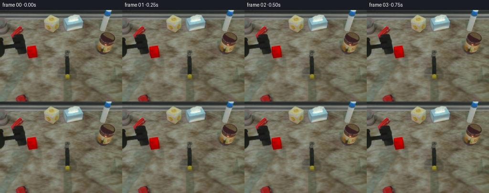
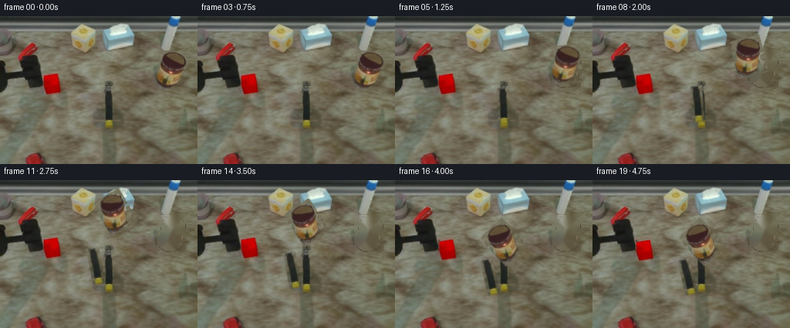

CODING AGENTS AS PIXEL WORLD MODELS
traex/DeepSeek-V4.1-Flash · common50_0049
点击播放 · 原生 RGB 像素
逐轮保存的候选
回放视频、检查图与代码变化。
每份候选均可单独播放。实际图片检查记录在下方工具轨迹中。
候选 01播放与检查图
点击播放 · 原生 RGB 像素


展开代码变化
--- 上一保存版本
+++ 本次保存版本
@@ -0,0 +1,258 @@
+from pathlib import Path
+
+import cv2
+import numpy as np
+from PIL import Image, ImageFilter
+
+import artifact_io
+
+
+CASE_DIR = Path(__file__).resolve().parent
+W, H, N, FPS = 256, 192, 20, 4
+
+
+def smoothstep(x):
+ x = np.clip(x, 0.0, 1.0)
+ return x * x * (3.0 - 2.0 * x)
+
+
+def interpolate_keys(t, keys):
+ for (t0, v0), (t1, v1) in zip(keys, keys[1:]):
+ if t <= t1:
+ u = smoothstep((t - t0) / max(t1 - t0, 1e-6))
+ return np.asarray(v0, float) * (1 - u) + np.asarray(v1, float) * u
+ return np.asarray(keys[-1][1], float)
+
+
+def warped_layer(image, alpha, matrix, out_shape):
+ h, w = out_shape
+ warped = cv2.warpAffine(
+ image,
+ matrix,
+ (w, h),
+ flags=cv2.INTER_LINEAR,
+ borderMode=cv2.BORDER_CONSTANT,
+ borderValue=(0, 0, 0),
+ )
+ warped_alpha = cv2.warpAffine(
+ alpha,
+ matrix,
+ (w, h),
+ flags=cv2.INTER_LINEAR,
+ borderMode=cv2.BORDER_CONSTANT,
+ borderValue=0,
+ )
+ return warped, np.clip(warped_alpha, 0.0, 1.0)
+
+
+def composite(base, rgb, alpha, opacity=1.0):
+ a = (alpha * opacity)[..., None]
+ return np.clip(base * (1.0 - a) + rgb * a, 0, 255)
+
+
+def feather_alpha(mask, sigma=0.75):
+ alpha = cv2.GaussianBlur(mask.astype(np.float32), (0, 0), sigma)
+ return np.clip(alpha, 0.0, 1.0)
+
+
+def make_tool_matte(rgb, hsv):
+ yy, xx = np.indices((H, W))
+ h, s, v = hsv[..., 0], hsv[..., 1], hsv[..., 2]
+ r, g, b = rgb[..., 0], rgb[..., 1], rgb[..., 2]
+ roi = (xx >= 198) & (xx <= 247) & (yy >= 42) & (yy <= 96)
+ color = (
+ ((h < 22) & (s > 88) & (v > 43))
+ | ((h < 35) & (s > 135) & (v > 68))
+ | ((r > g * 1.30) & (g > b * 1.15) & (r > 82))
+ )
+ mask = (roi & color).astype(np.uint8)
+ mask = cv2.morphologyEx(mask, cv2.MORPH_CLOSE, np.ones((5, 5), np.uint8))
+ mask = cv2.morphologyEx(mask, cv2.MORPH_OPEN, np.ones((3, 3), np.uint8))
+ count, labels, stats, _ = cv2.connectedComponentsWithStats(mask, 8)
+ kept = np.zeros_like(mask)
+ for index in range(1, count):
+ if stats[index, cv2.CC_STAT_AREA] > 50:
+ kept[labels == index] = 1
+ flood = kept.copy()
+ flood_mask = np.zeros((H + 2, W + 2), np.uint8)
+ cv2.floodFill(flood, flood_mask, (0, 0), 1)
+ kept |= 1 - flood
+ alpha = feather_alpha(kept, 0.65)
+ # Keep the metal collar and dark jaw connected to the colored body.
+ collar = (
+ (xx >= 203)
+ & (xx <= 242)
+ & (yy >= 45)
+ & (yy <= 94)
+ & ((kept > 0) | ((s < 70) & (v < 125)))
+ )
+ alpha = np.maximum(alpha, feather_alpha(collar.astype(np.uint8), 0.55))
+ return alpha
+
+
+def make_block_matte(rgb, hsv):
+ yy, xx = np.indices((H, W))
+ h, s, v = hsv[..., 0], hsv[..., 1], hsv[..., 2]
+ roi = (xx >= 52) & (xx <= 81) & (yy >= 72) & (yy <= 104)
+ red = (((h < 12) | (h > 170)) & (s > 105) & (v > 48)) | (
+ (rgb[..., 0] > rgb[..., 1] * 1.8) & (rgb[..., 0] > 75)
+ )
+ mask = (roi & red).astype(np.uint8)
+ mask = cv2.morphologyEx(mask, cv2.MORPH_CLOSE, np.ones((3, 3), np.uint8))
+ count, labels, stats, _ = cv2.connectedComponentsWithStats(mask, 8)
+ kept = np.zeros_like(mask)
+ for index in range(1, count):
+ if stats[index, cv2.CC_STAT_AREA] > 60:
+ kept[labels == index] = 1
+ flood = kept.copy()
+ flood_mask = np.zeros((H + 2, W + 2), np.uint8)
+ cv2.floodFill(flood, flood_mask, (0, 0), 1)
+ kept |= 1 - flood
+ return feather_alpha(kept, 0.6)
+
+
+def remove_layers(rgb, alphas):
+ base = rgb.astype(np.float32).copy()
+ # A small inpaint pass restores table texture behind the moving objects.
+ union = np.zeros((H, W), np.uint8)
+ for alpha in alphas:
+ union |= (alpha > 0.12).astype(np.uint8)
+ union = cv2.dilate(union, np.ones((3, 3), np.uint8), iterations=1)
+ repaired = cv2.inpaint(rgb.astype(np.uint8), union, 3, cv2.INPAINT_TELEA).astype(np.float32)
+ for alpha in alphas:
+ a = np.clip(alpha * 1.15, 0, 1)[..., None]
+ base = base * (1.0 - a) + repaired * a
+ return np.clip(base, 0, 255)
+
+
+def add_contact_shadow(base, cx, cy, rx, ry, strength):
+ yy, xx = np.indices((H, W))
+ d = ((xx - cx) / max(rx, 1)) ** 2 + ((yy - cy) / max(ry, 1)) ** 2
+ shadow = np.exp(-2.2 * d) * strength
+ shade = np.array([0.72, 0.73, 0.66], np.float32)
+ return base * (1.0 - shadow[..., None] * (1.0 - shade))
+
+
+def motion_matrix(t, center):
+ lift = interpolate_keys(
+ t,
+ [
+ (0.00, (0.0, 0.0)),
+ (0.16, (0.0, 0.0)),
+ (0.35, (-1.0, -13.0)),
+ (0.56, (-73.0, -28.0)),
+ (0.69, (-81.0, -25.0)),
+ (0.81, (-81.0, 7.0)),
+ (0.87, (-81.0, 15.0)),
+ (0.94, (-80.0, 10.0)),
+ (1.00, (-80.0, 11.0)),
+ ],
+ )
+ angle = interpolate_keys(
+ t,
+ [
+ (0.00, 0.0),
+ (0.16, 0.0),
+ (0.35, 8.0),
+ (0.56, 30.0),
+ (0.69, 30.0),
+ (0.81, 41.0),
+ (0.87, 46.0),
+ (0.94, 44.0),
+ (1.00, 44.0),
+ ],
+ )
+ matrix = cv2.getRotationMatrix2D(tuple(center), float(angle), 1.0)
+ matrix[:, 2] += lift
+ return matrix
+
+
+def gripper_matrix(t, center):
+ follow = interpolate_keys(
+ t,
+ [
+ (0.00, (0.0, 0.0)),
+ (0.16, (0.0, 0.0)),
+ (0.35, (-1.0, -5.0)),
+ (0.56, (-17.0, -8.0)),
+ (0.69, (-18.0, -6.0)),
+ (0.81, (-18.0, 4.0)),
+ (0.87, (-18.0, 8.0)),
+ (0.94, (-18.0, 5.0)),
+ (1.00, (-18.0, 6.0)),
+ ],
+ )
+ angle = interpolate_keys(
+ t,
+ [
+ (0.00, 0.0),
+ (0.16, 0.0),
+ (0.35, 3.0),
+ (0.56, 10.0),
+ (0.69, 10.0),
+ (0.81, 12.0),
+ (0.87, 13.0),
+ (0.94, 13.0),
+ (1.00, 13.0),
+ ],
+ )
+ matrix = cv2.getRotationMatrix2D(tuple(center), float(angle), 1.0)
+ matrix[:, 2] += follow
+ return matrix
+
+
+def main():
+ rgb = np.array(Image.open(CASE_DIR / "first_frame.png").convert("RGB"))
+ hsv = cv2.cvtColor(rgb, cv2.COLOR_RGB2HSV)
+ tool_alpha = make_tool_matte(rgb, hsv)
+ block_alpha = make_block_matte(rgb, hsv)
+ base = remove_layers(rgb, [tool_alpha, block_alpha])
+
+ tool_center = (221.0, 70.0)
+ block_center = (67.0, 87.0)
+ tool_rgb = rgb.astype(np.float32)
+ block_rgb = rgb.astype(np.float32)
+
+ frames = []
+ for index in range(N):
+ t = index / (N - 1)
+ if index == 0:
+ frames.append(rgb.copy())
+ continue
+
+ frame = base.copy()
+ # Stable contact shadow follows the carried block only after it leaves the table.
+ block_matrix = cv2.getRotationMatrix2D(block_center, 0.0, 1.0)
+ block_matrix[:, 2] += interpolate_keys(
+ t,
+ [
+ (0.00, (0.0, 0.0)),
+ (0.81, (0.0, 0.0)),
+ (0.87, (1.0, 4.0)),
+ (0.94, (0.0, 2.0)),
+ (1.00, (0.0, 3.0)),
+ ],
+ )
+ block_rgb_w, block_a = warped_layer(block_rgb, block_alpha, block_matrix, (H, W))
+ shadow_strength = 0.20 * smoothstep((t - 0.80) / 0.08)
+ frame = add_contact_shadow(frame, 65.0, 91.0, 21.0, 7.0, shadow_strength)
+
+ tool_rgb_w, tool_a = warped_layer(tool_rgb, tool_alpha, motion_matrix(t, tool_center), (H, W))
+ frame = composite(frame, tool_rgb_w, tool_a, 1.0)
+
+ grip_rgb_w, grip_a = warped_layer(
+ rgb.astype(np.float32),
+ feather_alpha(((np.indices((H, W))[1] >= 133) & (np.indices((H, W))[1] <= 148)
+ & (np.indices((H, W))[0] >= 96) & (np.indices((H, W))[0] <= 142)).astype(np.uint8), 0.7),
+ gripper_matrix(t, (141.0, 118.0)),
+ (H, W),
+ )
+ frame = composite(frame, grip_rgb_w, grip_a, 0.96)
+ frame = composite(frame, block_rgb_w, block_a, 1.0)
+ frames.append(np.clip(frame, 0, 255).astype(np.uint8))
+
+ artifact_io.save(frames, CASE_DIR)
+
+
+if __name__ == "__main__":
+ main()
候选 02播放与检查图
点击播放 · 原生 RGB 像素

展开代码变化
--- 上一保存版本
+++ 本次保存版本
@@ -111,6 +111,16 @@
return feather_alpha(kept, 0.6)
+def make_gripper_matte():
+ alpha = np.zeros((H, W), np.float32)
+ polygon = np.array(
+ [[135, 95], [145, 95], [146, 132], [152, 137], [151, 143], [132, 143], [134, 134]],
+ np.int32,
+ )
+ cv2.fillPoly(alpha, [polygon], 1.0)
+ return feather_alpha(alpha, 0.7)
+
+
def remove_layers(rgb, alphas):
base = rgb.astype(np.float32).copy()
# A small inpaint pass restores table texture behind the moving objects.
@@ -138,28 +148,29 @@
t,
[
(0.00, (0.0, 0.0)),
- (0.16, (0.0, 0.0)),
- (0.35, (-1.0, -13.0)),
- (0.56, (-73.0, -28.0)),
- (0.69, (-81.0, -25.0)),
- (0.81, (-81.0, 7.0)),
- (0.87, (-81.0, 15.0)),
- (0.94, (-80.0, 10.0)),
- (1.00, (-80.0, 11.0)),
+ (0.12, (0.0, 0.0)),
+ (0.25, (0.0, -3.0)),
+ (0.36, (-2.0, -24.0)),
+ (0.58, (-105.0, -31.0)),
+ (0.70, (-136.0, -5.0)),
+ (0.79, (-137.0, 3.0)),
+ (0.84, (-137.0, 9.0)),
+ (0.89, (-136.0, 3.0)),
+ (1.00, (-136.0, 5.0)),
],
)
angle = interpolate_keys(
t,
[
(0.00, 0.0),
- (0.16, 0.0),
- (0.35, 8.0),
- (0.56, 30.0),
- (0.69, 30.0),
- (0.81, 41.0),
- (0.87, 46.0),
- (0.94, 44.0),
- (1.00, 44.0),
+ (0.25, 0.0),
+ (0.36, 7.0),
+ (0.58, 17.0),
+ (0.70, 23.0),
+ (0.79, 26.0),
+ (0.84, 29.0),
+ (0.89, 25.0),
+ (1.00, 26.0),
],
)
matrix = cv2.getRotationMatrix2D(tuple(center), float(angle), 1.0)
@@ -172,28 +183,29 @@
t,
[
(0.00, (0.0, 0.0)),
- (0.16, (0.0, 0.0)),
- (0.35, (-1.0, -5.0)),
- (0.56, (-17.0, -8.0)),
- (0.69, (-18.0, -6.0)),
- (0.81, (-18.0, 4.0)),
- (0.87, (-18.0, 8.0)),
- (0.94, (-18.0, 5.0)),
- (1.00, (-18.0, 6.0)),
+ (0.12, (0.0, 0.0)),
+ (0.25, (77.0, -48.0)),
+ (0.36, (75.0, -72.0)),
+ (0.58, (-28.0, -79.0)),
+ (0.70, (-59.0, -53.0)),
+ (0.79, (-60.0, -45.0)),
+ (0.84, (-60.0, -39.0)),
+ (0.89, (-59.0, -45.0)),
+ (1.00, (-59.0, -43.0)),
],
)
angle = interpolate_keys(
t,
[
(0.00, 0.0),
- (0.16, 0.0),
- (0.35, 3.0),
- (0.56, 10.0),
- (0.69, 10.0),
- (0.81, 12.0),
- (0.87, 13.0),
- (0.94, 13.0),
- (1.00, 13.0),
+ (0.25, 0.0),
+ (0.36, 2.0),
+ (0.58, 6.0),
+ (0.70, 8.0),
+ (0.79, 9.0),
+ (0.84, 10.0),
+ (0.89, 8.0),
+ (1.00, 9.0),
],
)
matrix = cv2.getRotationMatrix2D(tuple(center), float(angle), 1.0)
@@ -206,7 +218,8 @@
hsv = cv2.cvtColor(rgb, cv2.COLOR_RGB2HSV)
tool_alpha = make_tool_matte(rgb, hsv)
block_alpha = make_block_matte(rgb, hsv)
- base = remove_layers(rgb, [tool_alpha, block_alpha])
+ gripper_alpha = make_gripper_matte()
+ base = remove_layers(rgb, [tool_alpha, block_alpha, gripper_alpha])
tool_center = (221.0, 70.0)
block_center = (67.0, 87.0)
@@ -227,28 +240,27 @@
t,
[
(0.00, (0.0, 0.0)),
- (0.81, (0.0, 0.0)),
- (0.87, (1.0, 4.0)),
- (0.94, (0.0, 2.0)),
- (1.00, (0.0, 3.0)),
+ (0.79, (0.0, 0.0)),
+ (0.84, (3.0, 3.0)),
+ (0.89, (1.0, 2.0)),
+ (1.00, (2.0, 2.0)),
],
)
block_rgb_w, block_a = warped_layer(block_rgb, block_alpha, block_matrix, (H, W))
- shadow_strength = 0.20 * smoothstep((t - 0.80) / 0.08)
- frame = add_contact_shadow(frame, 65.0, 91.0, 21.0, 7.0, shadow_strength)
+ shadow_strength = 0.20 * smoothstep((t - 0.81) / 0.08)
+ frame = add_contact_shadow(frame, 68.0, 92.0, 22.0, 7.0, shadow_strength)
tool_rgb_w, tool_a = warped_layer(tool_rgb, tool_alpha, motion_matrix(t, tool_center), (H, W))
+ frame = composite(frame, block_rgb_w, block_a, 1.0)
frame = composite(frame, tool_rgb_w, tool_a, 1.0)
grip_rgb_w, grip_a = warped_layer(
rgb.astype(np.float32),
- feather_alpha(((np.indices((H, W))[1] >= 133) & (np.indices((H, W))[1] <= 148)
- & (np.indices((H, W))[0] >= 96) & (np.indices((H, W))[0] <= 142)).astype(np.uint8), 0.7),
+ gripper_alpha,
gripper_matrix(t, (141.0, 118.0)),
(H, W),
)
frame = composite(frame, grip_rgb_w, grip_a, 0.96)
- frame = composite(frame, block_rgb_w, block_a, 1.0)
frames.append(np.clip(frame, 0, 255).astype(np.uint8))
artifact_io.save(frames, CASE_DIR)
候选 03播放与检查图
可观测工具轨迹
实际执行的命令与返回图片。
命令 1exit 0
/bin/bash -c "pwd && rg --files -g '"'!*.mp4'"' -g '"'!*.mov'"' | sort"
命令 2exit 0
/bin/bash -c 'cat prompt.txt'
命令 3exit 0
/bin/bash -c 'cat GENERATION_RULES.md'
命令 4exit 0
/bin/bash -c 'file first_frame.png && identify first_frame.png 2>/dev/null || true && ls -lah'
命令 5exit 0
/bin/bash -c 'cat task_spec.json'
命令 6exit 0
/bin/bash -c "sed -n '1,240p' artifact_io.py"
命令 7exit 0
/bin/bash -c "sed -n '1,260p' player_template.html"
命令 8exit 0
/bin/bash -c "python - <<'PY'
from PIL import Image
import numpy as np
im=np.array(Image.open('first_frame.png').convert('RGB'))
print(im.shape, im.dtype)
# top colors
u,c=np.unique(im.reshape(-1,3),axis=0,return_counts=True)
idx=np.argsort(c)[-30:][::-1]
for i in idx:
print(tuple(u[i]), int(c[i]))
print('mean',im.mean((0,1)),'std',im.std((0,1)))
PY"命令 9exit 0
/bin/bash -c "python - <<'PY'
from PIL import Image
im=Image.open('first_frame.png')
print(im.mode, im.size)
# ascii luminance with color-coded letter categories based on HSV/hue and brightness
import numpy as np, colorsys
a=np.array(im.convert('RGB')).astype(float)/255
mx=a.max(2); mn=a.min(2); d=mx-mn
# rough classes: red yellow blue green dark grey bright
for y in range(0,192,4):
s=''
for x in range(0,256,2):
r,g,b=a[y:y+4,x:x+2].mean((0,1)); mx=max(r,g,b);mn=min(r,g,b);d=mx-mn
if mx<0.16: ch=' '
elif d<0.07: ch='.' if mx<.45 else 'o'
elif r>g*1.25 and r>b*1.35: ch='R'
elif r>g*1.05 and g>b*1.25: ch='Y'
elif g>r*1.15 and g>b*1.1: ch='G'
elif b>r*1.15 and b>g*1.08: ch='B'
else: ch='x'
s+=ch
print(f'{y:03d} '+s)
PY"命令 10exit 0
/bin/bash -c "python - <<'PY' mods=['cv2','skimage','scipy','sklearn','imageio','matplotlib','numba'] for m in mods: try: x=__import__(m); print(m,'ok',getattr(x,'__version__','')) except Exception as e: print(m,'no',e) PY"
命令 11exit 0
/bin/bash -c "python - <<'PY'
import cv2, numpy as np
im=cv2.imread('first_frame.png')
# hsv ranges to inspect masks: red yellow blue/cyan gray black, silver, brown, green
hsv=cv2.cvtColor(im,cv2.COLOR_BGR2HSV)
# connected comps for manually chosen HSV hue/sat/value masks
masks={
'red':(((hsv[:,:,0]<10)|(hsv[:,:,0]>170))&(hsv[:,:,1]>100)&(hsv[:,:,2]>70)),
'yellow':((hsv[:,:,0]>15)&(hsv[:,:,0]<40)&(hsv[:,:,1]>90)&(hsv[:,:,2]>100)),
'blue':((hsv[:,:,0]>85)&(hsv[:,:,0]<140)&(hsv[:,:,1]>70)&(hsv[:,:,2]>60)),
'green':((hsv[:,:,0]>40)&(hsv[:,:,0]<85)&(hsv[:,:,1]>70)&(hsv[:,:,2]>50)),
'bright':(hsv[:,:,2]>180),
}
for name,m in masks.items():
n,lab,stats,cent=cv2.connectedComponentsWithStats(m.astype('uint8'),8)
print('\\n',name,'total',m.sum())
for i in sorted(range(1,n),key=lambda i:stats[i,4],reverse=True)[:15]:
x,y,w,h,area=stats[i]
if area>20: print(' ',area,(x,y,w,h),'cent',np.round(cent[i],1))
PY"命令 12exit 0
/bin/bash -c "python - <<'PY'
import cv2,numpy as np
im=cv2.imread('first_frame.png')
# print coarse ascii with exact object categories based on RGB (not HSV)
rgb=im[:,:,::-1]
# sample dominant colors in manually interesting regions
for name,(x0,y0,x1,y1) in {
'robot':(0,20,210,150),'toolhead':(190,45,245,105),'redblock':(50,70,85,105),'brown':(0,0,256,60),
'bg':(210,0,256,70),'black':(0,50,50,100),'table':(0,130,256,192)
}.items():
a=rgb[y0:y1,x0:x1].reshape(-1,3)
u,c=np.unique(a,axis=0,return_counts=True); idx=np.argsort(c)[-8:][::-1]
print('\\n',name)
for i in idx: print(tuple(u[i]),c[i])
PY"命令 13exit 0
/bin/bash -c "python - <<'PY'
from PIL import Image
im=Image.open('first_frame.png')
# save crops enlarged for potential terminal-based numeric checks later (no visual access)
for name,box in {'robot':(0,0,140,192),'right':(130,0,256,192),'center':(45,55,200,150)}.items():
im.crop(box).resize(((box[2]-box[0])*3,(box[3]-box[1])*3),Image.Resampling.NEAREST).save('.tmp/'+name+'.png')
PY"命令 14exit 0
/bin/bash -c "python - <<'PY'
import cv2,numpy as np
im=cv2.imread('first_frame.png')
# edge map region boxes / line segments to infer robot silhouette
gray=cv2.cvtColor(im,cv2.COLOR_BGR2GRAY)
# canny and hough
edges=cv2.Canny(gray,30,100)
lines=cv2.HoughLinesP(edges,1,np.pi/180,threshold=20,minLineLength=10,maxLineGap=4)
print('lines',len(lines) if lines is not None else 0)
if lines is not None:
for l in sorted(lines[:,0,:].tolist(), key=lambda p: -((p[2]-p[0])**2+(p[3]-p[1])**2))[:60]: print(l)
# coarse contours of dark mask
for th in [35,50,70,90,120]:
m=(gray<th).astype('uint8')*255
n,lab,stats,cent=cv2.connectedComponentsWithStats(m,8)
print('dark',th,[(int(stats[i,4]),tuple(stats[i,:4])) for i in sorted(range(1,n),key=lambda i:stats[i,4],reverse=True)[:10]])
PY"命令 15exit 0
/bin/bash -c "python - <<'PY'
import cv2, numpy as np
im=cv2.imread('first_frame.png')
# kmeans palette in LAB with K=24, print swatches and spatial centroids/bounds
lab=cv2.cvtColor(im,cv2.COLOR_BGR2LAB).reshape(-1,3).astype(np.float32)
crit=(cv2.TERM_CRITERIA_EPS+cv2.TERM_CRITERIA_MAX_ITER,80,.2)
_,labs,cent=cv2.kmeans(lab,24,None,crit,10,cv2.KMEANS_PP_CENTERS)
labs=labs.reshape(192,256)
cent_lab=cent.reshape(-1,1,3).astype(np.uint8)
pal=cv2.cvtColor(cent_lab,cv2.COLOR_LAB2BGR).reshape(-1,3)[:,::-1]
for k in np.argsort([np.sum(labs==i) for i in range(24)])[::-1]:
m=labs==k; ys,xs=np.where(m)
print(f'{k:2d} n={m.sum():5d} rgb={tuple(map(int,pal[k]))} bbox=({xs.min()},{ys.min()},{xs.max()},{ys.max()}) cent=({xs.mean():.1f},{ys.mean():.1f})')
# print coarse nearest-palette ID map at 4x4 modal
print('\\nmap 4x4')
for y in range(0,192,4):
s=''
for x in range(0,256,4):
a=labs[y:y+4,x:x+4].ravel(); k=np.bincount(a).argmax(); s+=chr(ord('A')+k)
print(f'{y:03d} {s}')
PY"命令 16exit 0
/bin/bash -c "python - <<'PY'
import cv2,numpy as np
im=cv2.imread('first_frame.png'); rgb=im[:,:,::-1]
hsv=cv2.cvtColor(im,cv2.COLOR_BGR2HSV)
# category map 2x2 dominant category
cats=np.zeros(im.shape[:2],np.uint8)
r,g,b=[rgb[:,:,i].astype(float) for i in range(3)]
mx=np.max(rgb,axis=2).astype(float); mn=np.min(rgb,axis=2).astype(float); d=mx-mn
sat=d/(mx+1)
# categories 0 bg tan,1 dark,2 red,3 yellow,4 cyan/silver,5 blue,6 green
cats[:]=0
cats[mx<75]=1
cats[(r>g*1.25)&(r>b*1.35)&(r>80)]=2
cats[(r>g*1.05)&(g>b*1.25)&(r>90)]=3
cats[(b>r*1.08)&(g>r*1.05)&(mx>80)]=4
cats[(b>r*1.25)&(b>g*1.1)&(mx>60)]=5
# neutral bright distinguished 7 if sat low and mx>150
cats[(sat<.12)&(mx>150)]=7
chars='.KR YCGs' # 0.,1K,2R,3Y,4C,5G,6?7s
for y in range(0,192,2):
s=''
for x in range(0,256,2):
a=cats[y:y+2,x:x+2].ravel(); k=np.bincount(a,minlength=8).argmax(); s+=chars[k]
print(f'{y:03d} {s}')
PY"命令 17exit 0
/bin/bash -c "python - <<'PY'
import cv2, numpy as np
im=cv2.imread('first_frame.png')
hsv=cv2.cvtColor(im,cv2.COLOR_BGR2HSV)
# silver tool head candidate mask in x 195:255 y 35:110: grayscale neutral bright-ish and darker with highlights
for name,m in {
'silver':((hsv[:,:,1]<70)&(hsv[:,:,2]>65)&(np.indices(hsv.shape[:2])[1]>190)&(np.indices(hsv.shape[:2])[1]<250)&(np.indices(hsv.shape[:2])[0]>35)&(np.indices(hsv.shape[:2])[0]<110)),
'darktool':((hsv[:,:,2]<90)&(np.indices(hsv.shape[:2])[1]>185)&(np.indices(hsv.shape[:2])[0]>35)&(np.indices(hsv.shape[:2])[0]<110)),
'red':(((hsv[:,:,0]<12)|(hsv[:,:,0]>170))&(hsv[:,:,1]>130)&(hsv[:,:,2]>100)),
}.items():
n,lab,stats,cent=cv2.connectedComponentsWithStats(m.astype('uint8'),8)
print(name, m.sum())
for i in sorted(range(1,n),key=lambda i:stats[i,4],reverse=True)[:10]:
print(' ',stats[i].tolist(),np.round(cent[i],1).tolist())
# display RGB grid every 4 px for tool region, with grayscale palette chars
rgb=im[:,:,::-1]
print('tool grid')
for y in range(40,108,2):
s=''
for x in range(190,250,1):
r,g,b=rgb[y,x]
v=int((int(r)+int(g)+int(b))/3)
if r>120 and r>g*1.5: ch='R'
elif v<50:ch=' '
elif v<75:ch='.'
elif v<100:ch='-'
elif v<130:ch='+'
elif v<160:ch='*'
elif v<190:ch='o'
else:ch='#'
s+=ch
print(f'{y:03d} {s}')
PY"命令 18exit 0
/bin/bash -c "python - <<'PY'
import cv2,numpy as np
im=cv2.imread('first_frame.png'); rgb=im[:,:,::-1]
# Print 1 px color runs on selected scanlines, quantize to 16 and merge runs
for y in [20,30,40,50,60,70,80,90,100,120,140,160,180]:
a=(rgb[y]//24).astype(int)
# summarize top categories each 8 block
s=''
for x in range(0,256,4):
q=tuple(a[x:x+4].mean(0).round().astype(int))
s+=f' {q[0]:x}{q[1]:x}{q[2]:x}'
print(y,s)
PY"命令 19exit 0
/bin/bash -c "python - <<'PY'
import cv2,numpy as np
im=cv2.imread('first_frame.png'); rgb=im[:,:,::-1]
# object segmentation by background model: bg estimated from tan table (chroma) vs robot neutral dark
# print exact colors of suspected robot joints: x=120..180 y=90..160 region
for box in [(120,90,185,165),(0,50,150,140),(200,40,245,105),(50,70,82,105),(20,30,55,60)]:
x0,y0,x1,y1=box; a=rgb[y0:y1,x0:x1].reshape(-1,3)
print('\\nbox',box)
# quantized clusters in RGB with kmeans 8
z=a.astype(np.float32); crit=(3,40,.2); _,l,c=cv2.kmeans(z,8,None,crit,10,cv2.KMEANS_PP_CENTERS)
for i in np.argsort(np.bincount(l.ravel(),minlength=8))[::-1]:
print(np.round(c[i]).astype(int).tolist(),int((l.ravel()==i).sum()))
PY"命令 20exit 0
/bin/bash -c "python - <<'PY'
from PIL import Image
import numpy as np
a=np.array(Image.open('first_frame.png').convert('RGB'))
r,g,b=[a[:,:,i].astype(int) for i in range(3)]
m=(r>110)&(r>g*1.8)&(r>b*1.8)
for y in range(25,110):
s=''.join('#' if m[y,x] else ' ' for x in range(10,95))
if '#' in s: print(f'{y:03d} {s}')
PY"命令 21exit 0
/bin/bash -c "python - <<'PY'
import cv2,numpy as np
im=cv2.imread('first_frame.png'); rgb=im[:,:,::-1]
# edges of robot black: print ascii of neutral dark mask in x0..190,y35..150, 1 pixel but compress 2x2
r,g,b=[rgb[:,:,i].astype(int) for i in range(3)]
mx=rgb.max(2); mn=rgb.min(2)
m=(mx<95)&((mx-mn)<20)
for y in range(34,150,2):
s=''
for x in range(0,190,2):
s += '#' if m[y:y+2,x:x+2].mean()>.5 else ('+' if m[y:y+2,x:x+2].mean()>.2 else ' ')
print(f'{y:03d} {s}')
PY"命令 22exit 0
/bin/bash -c "python - <<'PY'
import cv2,numpy as np
im=cv2.imread('first_frame.png')
# sample HSV and RGB of points around likely parts
pts=[(222,60),(222,70),(220,75),(220,80),(220,90),(225,100),(200,70),(210,85),(230,85),(220,20),(150,20),(100,20),(60,20),(140,140),(150,130),(140,110),(135,90),(120,80),(80,80),(66,87),(40,45),(45,185)]
hsv=cv2.cvtColor(im,cv2.COLOR_BGR2HSV)
for x,y in pts:
print((x,y),'rgb',im[y,x,::-1].tolist(),'hsv',hsv[y,x].tolist())
PY"命令 23exit 0
/bin/bash -c "python - <<'PY'
import cv2,numpy as np
im=cv2.imread('first_frame.png'); rgb=im[:,:,::-1]
# generate annotated grid images with line/coordinates, to potentially use image preview unavailable; instead print structural color map per object
# For each row, find continuous runs satisfying red, yellow, dark, bright-neutral in region x0..256
r,g,b=[rgb[:,:,i].astype(int) for i in range(3)]; mx=rgb.max(2); mn=rgb.min(2)
masks={'R':(r>90)&(r>g*1.6)&(r>b*1.6),'Y':(r>g*1.02)&(g>b*1.18)&(r>75)&((mx-mn)>20),'K':(mx<75)&((mx-mn)<30),'S':(mx>135)&((mx-mn)<25)}
for y in [20,30,40,50,60,70,75,80,85,90,100,110,120,130,140,150,160,170,180,185]:
s=''
for x in range(0,256,2):
found=[]
for k,m in masks.items():
if m[y,x:x+2].mean()>.5:found.append(k)
s+=found[0] if found else ' '
print(f'{y:03d} {s}')
PY"命令 24exit 0
/bin/bash -c "python - <<'PY'
import cv2,numpy as np
im=cv2.imread('first_frame.png'); rgb=im[:,:,::-1]
# Analyze variance/edges by 16x16 tile to find object boundaries
for size in [8,16,32]:
print('\\nTILE',size)
for y in range(0,192,size):
vals=[]
for x in range(0,256,size):
a=rgb[y:y+size,x:x+size].astype(float)
# saturation, brightness, color means
mx=a.max(2); mn=a.min(2); sat=(mx-mn)/(mx+1)
# mean chroma and texture
vals.append((mx.mean(),sat.mean(),cv2.Laplacian(cv2.cvtColor(a.astype(np.uint8),cv2.COLOR_RGB2GRAY),cv2.CV_32F).std()))
#print(y, ' '.join(f'{int(v[0]):3d}/{v[1]:.2f}/{v[2]:.0f}' for v in vals))
# object candidates: use background subtraction between pixels and robust row/col model
# color coordinates ranges for major colors
r,g,b=[rgb[:,:,i].astype(int) for i in range(3)]; mx=rgb.max(2); mn=rgb.min(2)
conds={
'red':(r>90)&(r>g*1.7)&(r>b*1.7),
'yellow':(r>g*1.0)&(g>b*1.25)&(r>70)&((mx-mn)>30),
'blue':(b>r*1.3)&(b>g*1.1)&(b>55),
'dark':(mx<70),
'brightneutral':(mx>145)&((mx-mn)<30),
}
for name,m in conds.items():
ys,xs=np.where(m)
print('\\n',name,'n',len(xs),'bbox',(xs.min(),ys.min(),xs.max(),ys.max()),'mean',(xs.mean(),ys.mean()))
# 8x8 occupancy
print('map')
for y in range(0,192,8):
s=''
for x in range(0,256,8):
q=m[y:y+8,x:x+8].mean()
s+= ' ' if q<.05 else ('.' if q<.2 else ('+' if q<.5 else '#'))
print(f'{y:03d} {s}')
PY"命令 25exit 0
/bin/bash -c "python - <<'PY'
import cv2,numpy as np
im=cv2.imread('first_frame.png'); rgb=im[:,:,::-1]
# hue-coded full frame downsampled 2x2 with names based on nearest kmeans palette and spatial label manually
# quantized HSV hue bins with sat/value thresholds, print hue letter
hsv=cv2.cvtColor(im,cv2.COLOR_BGR2HSV); h=hsv[:,:,0].astype(int); s=hsv[:,:,1]; v=hsv[:,:,2]
# bins hue 0 red, 1 orange,2 yellow,3 green,4 cyan,5 blue,6 magenta; lowercase dark
bins=np.zeros_like(h)
bins[(h<10)|(h>=170)]=0
bins[(h>=10)&(h<22)]=1
bins[(h>=22)&(h<38)]=2
bins[(h>=38)&(h<85)]=3
bins[(h>=85)&(h<140)]=4
bins[(h>=140)&(h<170)]=5
chars='ROYGCB'
for y in range(0,192,3):
st=''
for x in range(0,256,2):
ss=s[y:y+3,x:x+2].mean(); vv=v[y:y+3,x:x+2].mean(); bb=np.bincount(bins[y:y+3,x:x+2].ravel(),minlength=6).argmax()
if ss<18: ch=' ' if vv<80 else ('#' if vv>150 else '.')
elif ss<45: ch='k' if vv<80 else ('s' if vv>145 else ':')
else: ch=chars[bb]
st+=ch
print(f'{y:03d} {st}')
PY"命令 26exit 0
/bin/bash -c "python - <<'PY'
import cv2,numpy as np
im=cv2.imread('first_frame.png'); rgb=im[:,:,::-1]
# Save a much larger textual grid for the gripper object: x120-190,y80-145, using hue + value; 1 char per px would be huge. 2x2.
hsv=cv2.cvtColor(im,cv2.COLOR_BGR2HSV)
chars='ROYGCB'
for y in range(75,145,2):
s=''
for x in range(115,195,2):
hh=int(hsv[y:y+2,x:x+2,0].mean()); ss=int(hsv[y:y+2,x:x+2,1].mean()); vv=int(hsv[y:y+2,x:x+2,2].mean())
if ss<15: ch=' ' if vv<70 else ('.' if vv<120 else '#')
elif ss<45: ch='k' if vv<75 else ('s' if vv>145 else ':')
else: ch=chars[min(5,hh//30)]
s+=ch
print(f'{y:03d} {s}')
PY"命令 27exit 0
/bin/bash -c "python - <<'PY'
import cv2,numpy as np
im=cv2.imread('first_frame.png')
# Is there EXIF / source metadata? PIL info
from PIL import Image
x=Image.open('first_frame.png')
print(x.info)
print(x.getbbox(),x.getextrema())
PY"命令 28exit 0
/bin/bash -c "python - <<'PY'
from PIL import Image
import numpy as np
a=np.array(Image.open('first_frame.png'))
# bbox for darkest connected comps, toolhead shape via dark
from scipy import ndimage
rgb=a.astype(int); mx=rgb.max(2); mn=rgb.min(2)
for name,m in [('dark',mx<60),('vivid',(mx-mn)>90),('yellow',(rgb[:,:,0]>120)&(rgb[:,:,1]>80)&(rgb[:,:,2]<70)),('metal',(mx>130)&((mx-mn)<30))]:
lab,n=ndimage.label(m)
print(name)
sizes=ndimage.sum(m,lab,range(1,n+1))
for i in np.argsort(sizes)[-15:][::-1]+1:
ys,xs=np.where(lab==i)
print(int(sizes[i-1]),(xs.min(),ys.min(),xs.max(),ys.max()),(xs.mean().round(1),ys.mean().round(1)))
PY"命令 29exit 0
/bin/bash -c "python - <<'PY'
import cv2,numpy as np
im=cv2.imread('first_frame.png'); rgb=im[:,:,::-1]
# Find orange/yellow object in upper right; output bounding components and edges
r,g,b=[rgb[:,:,i].astype(int) for i in range(3)]
m=(r>90)&(g>45)&(b<65)&(r>g*1.15)&(g>b*1.5)
from scipy import ndimage
lab,n=ndimage.label(m)
for i in range(1,n+1):
ys,xs=np.where(lab==i)
if len(xs)>20:print(len(xs),(xs.min(),ys.min(),xs.max(),ys.max()),(xs.mean(),ys.mean()))
# contours at x190:255,y30:110
PY"命令 30exit 0
/bin/bash -c "python - <<'PY'
from PIL import Image
import numpy as np
im=Image.open('first_frame.png').convert('RGB')
a=np.array(im)
# ImageMagick-like terminal half blocks with ANSI truecolor, 128x96, maybe tool output can display colored terminal? create ANSI escape string
# Downsample each 2x2 region to one char colored foreground/background
W,H=128,96
small=np.array(im.resize((W,H),Image.Resampling.BOX))
# quantize for readable palette? output ANSI with half block upper/lower
for y in range(0,H,2):
line=''
for x in range(W):
r1,g1,b1=small[y,x]; r2,g2,b2=small[min(y+1,H-1),x]
line+=f'\\x1b[38;2;{r1};{g1};{b1}m\\x1b[48;2;{r2};{g2};{b2}mâ'
line+='\\x1b[0m'
print(line)
PY"命令 31exit 0
/bin/bash -c "python - <<'PY'
import cv2,numpy as np
im=cv2.imread('first_frame.png'); rgb=im[:,:,::-1]
z=rgb.reshape(-1,3).astype(np.float32)
crit=(cv2.TERM_CRITERIA_EPS+cv2.TERM_CRITERIA_MAX_ITER,100,.1)
_,l,c=cv2.kmeans(z,12,None,crit,20,cv2.KMEANS_PP_CENTERS)
l=l.reshape(192,256)
# sort by luminance and assign char
order=np.argsort(c@np.array([.299,.587,.114]))
chars='0123456789AB'
mp={int(k):chars[i] for i,k in enumerate(order)}
print('palette')
for i,k in enumerate(order): print(chars[i],np.round(c[k]).astype(int).tolist(),int((l==k).sum()))
print('map')
for y in range(0,192,4):
s=''
for x in range(0,256,4):
a=l[y:y+4,x:x+4].ravel(); s+=mp[int(np.bincount(a).argmax())]
print(f'{y:03d} {s}')
PY"命令 32exit 0
/bin/bash -c "python - <<'PY'
import cv2,numpy as np
im=cv2.imread('first_frame.png'); rgb=im[:,:,::-1]; hsv=cv2.cvtColor(im,cv2.COLOR_BGR2HSV)
# 1 px map x70..190 y5..55, character by hue/brightness
for y in range(5,56):
s=''
for x in range(70,191):
h,sa,v=hsv[y,x]
r,g,b=rgb[y,x]
if v<45: ch=' '
elif sa<25: ch='#' if v>170 else ('s' if v>120 else ('.' if v>70 else 'k'))
elif h<12 or h>170: ch='R'
elif h<24: ch='O'
elif h<40: ch='Y'
elif h<90: ch='G'
elif h<140: ch='C'
else: ch='B'
s+=ch
print(f'{y:03d} {s}')
PY"命令 33exit 0
/bin/bash -c "python - <<'PY'
import cv2,numpy as np
im=cv2.imread('first_frame.png'); rgb=im[:,:,::-1]
# grayscale of object region to reveal geometric shapes x180..250 y40..110, values mapped to 10 chars
for y in range(40,111):
s=''
for x in range(180,251):
v=int(rgb[y,x].mean())
ch=' .:-=+*#%@'[min(9,v//26)]
s+=ch
print(f'{y:03d} {s}')
PY"命令 34exit 0
/bin/bash -c "python - <<'PY'
import cv2,numpy as np
im=cv2.imread('first_frame.png'); rgb=im[:,:,::-1]
# Analyze likely gripper at (137,97)-(145,134): print RGB row/cols around it
for y in range(90,140):
vals=[]
for x in range(132,151):
r,g,b=rgb[y,x]; vals.append(f'{r:02x}{g:02x}{b:02x}')
print(y,' '.join(vals))
PY"命令 35exit 0
/bin/bash -c "python - <<'PY'
import cv2,numpy as np
im=cv2.imread('first_frame.png'); rgb=im[:,:,::-1]
# print low-sat dark / black object map for x0..190 y40..105 at 2x2 with actual thresholds
mx=rgb.max(2); mn=rgb.min(2)
for y in range(38,106,2):
s=''
for x in range(0,190,2):
a=mx[y:y+2,x:x+2].mean(); b=(mx-mn)[y:y+2].mean()
if a<40 and b<20: ch='#'
elif a<60 and b<25:ch='%'
elif a<80 and b<30:ch='+'
elif a<105 and b<35:ch='-'
else:ch=' '
s+=ch
print(f'{y:03d} {s}')
PY"命令 36exit 0
/bin/bash -c "python - <<'PY'
import cv2,numpy as np
im=cv2.imread('first_frame.png'); rgb=im[:,:,::-1]
# same map x0..190 y0..40, dark features
mx=rgb.max(2); mn=rgb.min(2)
for y in range(0,42,2):
s=''
for x in range(0,190,2):
a=mx[y:y+2,x:x+2].mean(); b=(mx-mn)[y:y+2].mean()
if a<40 and b<20: ch='#'
elif a<60 and b<25:ch='%'
elif a<80 and b<30:ch='+'
elif a<105 and b<35:ch='-'
else:ch=' '
s+=ch
print(f'{y:03d} {s}')
PY"命令 37exit 0
/bin/bash -c "python - <<'PY'
import cv2,numpy as np
im=cv2.imread('first_frame.png'); rgb=im[:,:,::-1]; hsv=cv2.cvtColor(im,cv2.COLOR_BGR2HSV)
# grayscale maps for left black object x0..60 y30..105
for y in range(28,106):
s=''
for x in range(0,60):
v=int(rgb[y,x].mean()); sat=int(hsv[y,x,1])
ch=' .:-=+*#%@'[min(9,v//26)]
if sat>100 and rgb[y,x,0]>rgb[y,x,1]*1.5: ch='R'
s+=ch
print(f'{y:03d} {s}')
PY"命令 38exit 0
/bin/bash -c "python - <<'PY'
import cv2,numpy as np
im=cv2.imread('first_frame.png'); rgb=im[:,:,::-1]; hsv=cv2.cvtColor(im,cv2.COLOR_BGR2HSV)
# right tool region color categories at 1 px for x190..250 y45..105 but compact per 1px and chars based hue
for y in range(42,106):
s=''
for x in range(190,251):
h,sa,v=hsv[y,x]; r,g,b=rgb[y,x]
if v<40:ch=' '
elif sa<18:ch='#' if v>170 else ('s' if v>120 else ('.' if v>70 else 'k'))
elif h<10 or h>170:ch='R'
elif h<22:ch='O'
elif h<40:ch='Y'
elif h<85:ch='G'
elif h<140:ch='C'
else:ch='B'
s+=ch
print(f'{y:03d} {s}')
PY"命令 39exit 0
/bin/bash -c "python - <<'PY'
import cv2,numpy as np
im=cv2.imread('first_frame.png'); rgb=im[:,:,::-1]
# print map x180..250 y40..110 with threshold based on difference from tan background: saturation drop? Actually categorize orange saturation, red etc
hsv=cv2.cvtColor(im,cv2.COLOR_BGR2HSV)
for y in range(40,111):
s=''
for x in range(180,251):
h,sa,v=hsv[y,x]
if sa<80: ch=' '
elif h<8 or h>170:ch='R'
elif h<20:ch='r'
elif h<32:ch='o'
elif h<50:ch='y'
else:ch='g'
s+=ch
print(f'{y:03d} {s}')
PY"命令 40exit 0
/bin/bash -c "python - <<'PY'
import cv2,numpy as np
im=cv2.imread('first_frame.png'); rgb=im[:,:,::-1]
# Determine alpha matte using background color variation: satur high red region component and grabcut with box around object
mask=np.zeros(im.shape[:2],np.uint8); rect=(185,42,66,65)
bgd=np.zeros((1,65),np.float64); fgd=np.zeros((1,65),np.float64)
cv2.grabCut(im,mask,rect,bgd,fgd,5,cv2.GC_INIT_WITH_RECT)
m=((mask==1)|(mask==3))
ys,xs=np.where(m)
print('grabcut',m.sum(),(xs.min(),ys.min(),xs.max(),ys.max()))
# print map
for y in range(40,110,2):
s=''
for x in range(180,256,2):
q=m[y:y+2,x:x+2].mean(); s+= '#' if q>.8 else ('+' if q>.3 else ' ')
print(f'{y:03d} {s}')
PY"命令 41exit 0
/bin/bash -c "python - <<'PY'
import cv2,numpy as np
im=cv2.imread('first_frame.png'); rgb=im[:,:,::-1]
# GrabCut candidates for red block and gripper
for name,rect in [('red',(50,68,36,38)),('gripper',(128,84,28,58)),('leftblack',(0,48,58,55))]:
mask=np.zeros(im.shape[:2],np.uint8); bgd=np.zeros((1,65),np.float64); fgd=np.zeros((1,65),np.float64)
cv2.grabCut(im,mask,rect,bgd,fgd,8,cv2.GC_INIT_WITH_RECT)
m=((mask==1)|(mask==3)); ys,xs=np.where(m)
print('\\n',name,m.sum(),(xs.min(),ys.min(),xs.max(),ys.max()))
x0,y0,x1,y1=rect
for y in range(y0,y0+(y1-y0),2):
s=''
for x in range(x0,x0+(x1-x0),2):
q=m[y:y+2,x:x+2].mean(); s+= '#' if q>.8 else ('+' if q>.3 else ' ')
print(f'{y:03d} {s}')
PY"命令 42exit 0
/bin/bash -c "python - <<'PY'
import cv2,numpy as np
im=cv2.imread('first_frame.png'); rgb=im[:,:,::-1]
# detect yellow/black tool as object mask in right using grabcut broad box x188 y35 67x85, output per 2 px
mask=np.zeros(im.shape[:2],np.uint8); rect=(188,35,68,85); bgd=np.zeros((1,65),np.float64); fgd=np.zeros((1,65),np.float64)
cv2.grabCut(im,mask,rect,bgd,fgd,10,cv2.GC_INIT_WITH_RECT)
m=((mask==1)|(mask==3)); ys,xs=np.where(m); print(m.sum(),(xs.min(),ys.min(),xs.max(),ys.max()))
for y in range(34,122,2):
s=''
for x in range(180,256,2):
q=m[y:y+2,x:x+2].mean(); s+= '#' if q>.8 else ('+' if q>.3 else ' ')
print(f'{y:03d} {s}')
PY"命令 43exit 0
/bin/bash -c "python - <<'PY'
import cv2,numpy as np
im=cv2.imread('first_frame.png'); rgb=im[:,:,::-1]
# print gradient map object boundary region via sobel/laplacian magnitude downsample x180..250,y35..110
G=cv2.cvtColor(im,cv2.COLOR_BGR2GRAY); e=cv2.Canny(G,20,60)
for y in range(35,111,2):
s=''
for x in range(180,251,1):
q=e[y:y+2,x:x+1].mean(); s+= '#' if q>.5 else ('+' if q>.15 else ' ')
print(f'{y:03d} {s}')
PY"命令 44exit 0
/bin/bash -c "python - <<'PY'
import cv2,numpy as np
im=cv2.imread('first_frame.png'); rgb=im[:,:,::-1]
# classify connected component of object by flood fill at center 220,60 based color distance to bg neighborhoods
# compare patches: object mask is low hue? Let's print 3D PCA of right crop to understand
crop=rgb[42:96,200:248].reshape(-1,3).astype(float)
mean=crop.mean(0); z=crop-mean; cov=z.T@z/len(z); w,v=np.linalg.eigh(cov)
print('mean',mean,'eig',w)
print('components',v)
# projections stats spatial? PCA 3D -> colors
# hue histogram crop
hsv=cv2.cvtColor(im[42:96,200:248],cv2.COLOR_BGR2HSV)
print('hue hist',np.histogram(hsv[:,:,0],bins=np.arange(0,181,10))[0])
print('sat hist',np.histogram(hsv[:,:,1],bins=np.arange(0,256,20))[0])
PY"命令 45exit 0
/bin/bash -c "python - <<'PY'
import cv2,numpy as np
im=cv2.imread('first_frame.png'); rgb=im[:,:,::-1]; hsv=cv2.cvtColor(im,cv2.COLOR_BGR2HSV)
# top center crop, grayscale ascii x80..190 y5..55
for y in range(5,56):
s=''
for x in range(80,191):
v=int(rgb[y,x].mean()); sat=int(hsv[y,x,1])
ch=' .:-=+*#%@'[min(9,v//26)]
if sat>60 and rgb[y,x,0]>rgb[y,x,1]*1.15 and rgb[y,x,1]>rgb[y,x,2]*1.3: ch='Y'
if sat>80 and (hsv[y,x,0]>80): ch='B'
s+=ch
print(f'{y:03d} {s}')
PY"命令 46exit 0
/bin/bash -c "python - <<'PY'
import cv2,numpy as np
im=cv2.imread('first_frame.png'); rgb=im[:,:,::-1]
# print grayscale x0..120 y25..80 showing black object relative to arm
for y in range(25,81):
s=''
for x in range(0,121):
v=int(rgb[y,x].mean()); sat=int(cv2.cvtColor(im[y:y+1,x:x+1],cv2.COLOR_BGR2HSV)[0,0,1])
ch=' .:-=+*#%@'[min(9,v//26)]
if sat>100 and rgb[y,x,0]>rgb[y,x,1]*1.5: ch='R'
s+=ch
print(f'{y:03d} {s}')
PY"命令 47exit 0
/bin/bash -c "python - <<'PY'
from PIL import Image
import numpy as np
im=Image.open('first_frame.png')
# use OCR? tesseract availability / strings no. Visual unavailable. Could leverage terminal sixel? no.
# Print semantic object masks using SAM unavailable. Use SLIC? check skimage unavailable but cv2.ximgproc?
print('ximgproc',hasattr(__import__('cv2'),'ximgproc'))
print('cv2 modules seg', [x for x in dir(__import__('cv2')) if 'seg' in x.lower()][:30])
PY"命令 48exit 0
/bin/bash -c "python - <<'PY'
import cv2,numpy as np
im=cv2.imread('first_frame.png'); rgb=im[:,:,::-1]
# object mask based on saturation: yellow/red have sat > 80. connected regions after morphology. print stats and map of all high sat in tool crop
hsv=cv2.cvtColor(im,cv2.COLOR_BGR2HSV); m=((hsv[:,:,1]>75)&(hsv[:,:,2]>35)).astype('uint8')
# within x200..245 y44..95 all connected?
n,lab,stats,cent=cv2.connectedComponentsWithStats(m,8)
for i in sorted(range(1,n),key=lambda i:stats[i,4],reverse=True)[:20]:
x,y,w,h,a=stats[i];
if a>10: print(a,(x,y,w,h))
# masks by rows
for y in range(44,95,2):
s=''
for x in range(195,251,1):
s+='#' if m[y,x] else ' '
print(f'{y:03d} {s}')
PY"命令 49exit 0
/bin/bash -c "python - <<'PY'
import cv2,numpy as np
im=cv2.imread('first_frame.png'); rgb=im[:,:,::-1]
# print crop x195..250 y42..95 grayscale, with high-sat masked as color char for shape
hsv=cv2.cvtColor(im,cv2.COLOR_BGR2HSV)
for y in range(42,96):
s=''
for x in range(195,251):
h,sa,v=hsv[y,x]; r,g,b=rgb[y,x]; mx=max(r,g,b); mn=min(r,g,b)
if v<35:ch=' '
elif sa>75:
if h<8 or h>170:ch='R'
elif h<22:ch='O'
elif h<38:ch='Y'
elif h<85:ch='G'
elif h<140:ch='C'
else:ch='B'
elif v>180:ch='@'
elif v>145:ch='%'
elif v>115:ch='*'
elif v>85:ch='+'
elif v>65:ch='-'
elif v>50:ch='.'
else:ch=' '
s+=ch
print(f'{y:03d} {s}')
PY"命令 50exit 0
/bin/bash -c "python - <<'PY'
import cv2,numpy as np
im=cv2.imread('first_frame.png'); rgb=im[:,:,::-1]; hsv=cv2.cvtColor(im,cv2.COLOR_BGR2HSV)
# grayscale / hue map crop center-bottom x115..200 y85..175, 1px but output 2x2 char
for y in range(85,176,2):
s=''
for x in range(115,201,2):
h,sa,v=hsv[y:y+2,x:x+2,0].mean(),hsv[y:y+2,x:x+2,1].mean(),hsv[y:y+2,x:x+2,2].mean()
if v<40: ch=' '
elif sa<20: ch='k' if v<75 else ('.' if v<115 else ('s' if v<155 else '#'))
elif sa<60: ch=':'
elif h<10 or h>170: ch='R'
elif h<22: ch='O'
elif h<40: ch='Y'
elif h<85: ch='G'
elif h<140: ch='C'
else: ch='B'
s+=ch
print(f'{y:03d} {s}')
PY"命令 51exit 0
/bin/bash -c "python - <<'PY'
import cv2,numpy as np
im=cv2.imread('first_frame.png'); rgb=im[:,:,::-1]
# candidate black-and-yellow tool: infer silhouette via GrabCut manual seeds around x202..242 y46..92. Output mask RGB and bbox
mask=np.zeros(im.shape[:2],np.uint8); mask[:]=cv2.GC_BGD
mask[45:94,200:245]=cv2.GC_PR_BGD
mask[48:92,204:241]=cv2.GC_PR_FGD
mask[54:88,207:238]=cv2.GC_FGD
bgd=np.zeros((1,65),np.float64);fgd=np.zeros((1,65),np.float64)
cv2.grabCut(im,mask,None,bgd,fgd,12,cv2.GC_INIT_WITH_MASK)
m=((mask==1)|(mask==3)); ys,xs=np.where(m); print(m.sum(),(xs.min(),ys.min(),xs.max(),ys.max()))
for y in range(42,96):
s=''
for x in range(195,251):
q=m[y,x]
if q:
h,sat,v=cv2.cvtColor(im[y:y+1,x:x+1],cv2.COLOR_BGR2HSV)[0,0];
s+= 'R' if h<10 or h>170 else ('O' if h<22 else ('Y' if h<40 else '#'))
else:s+=' '
print(f'{y:03d} {s}')
PY"命令 52exit 0
/bin/bash -c "python - <<'PY'
import cv2,numpy as np
im=cv2.imread('first_frame.png'); rgb=im[:,:,::-1]
# topmost exact bright region component x95..180 y0..50; identify blue object above
hsv=cv2.cvtColor(im,cv2.COLOR_BGR2HSV)
# print actual RGB stats for blue x218..234,y0..14
for y in range(0,15):
print(y,[tuple(rgb[y,x]) for x in range(218,235)])
PY"命令 53exit 0
/bin/bash -c "python - <<'PY'
from PIL import Image
import numpy as np
a=np.array(Image.open('first_frame.png').convert('RGB')).astype(int)
mx=a.max(2); mn=a.min(2); v=a.mean(2)
# bright metal mask with v>130 and low chroma or blueish
m=(v>130)&((mx-mn)<55)
# print x80..190 y8..50 mask 1px, coordinate ruler
print(' '+''.join(str((x//10)%10) for x in range(80,191)))
print(' '+''.join(str(x%10) for x in range(80,191)))
for y in range(8,51):
s=''.join('#' if m[y,x] else ('.' if v[y,x]>95 else ' ') for x in range(80,191))
print(f'{y:03d} {s}')
PY"命令 54exit 0
/bin/bash -c "python - <<'PY'
from PIL import Image
import numpy as np
a=np.array(Image.open('first_frame.png').convert('RGB')).astype(int)
mx=a.max(2); mn=a.min(2); v=a.mean(2)
# full frame edge/category thumbnail 128x96 using colors mapped to named codes for regions; print 4x4 modal category using custom semantic rules
# manually crop gray region x0..200,y80..180 to see robot arms in contrast map
m=(v<70)&((mx-mn)<35)
print(' '+''.join(str((x//10)%10) for x in range(0,201)))
print(' '+''.join(str(x%10) for x in range(0,201)))
for y in range(80,181,2):
s=''
for x in range(0,201):
s+='#' if m[y:y+2,x:x+1].mean()>.5 else ('+' if v[y,x]<90 and mx[y,x]-mn[y,x]<35 else ' ')
print(f'{y:03d} {s}')
PY"命令 55exit 0
/bin/bash -c "python - <<'PY'
import cv2,numpy as np
im=cv2.imread('first_frame.png'); rgb=im[:,:,::-1]
# center object near 130..160,100..145 likely wrist; print detailed grayscale x115..175 y85..150 with 1px but values compressed 2 chars per pixel horizontally
for y in range(85,151,2):
s=''
for x in range(115,176,2):
v=rgb[y:y+2,x:x+2].mean()
s+=' .:-=+*#%@'[min(9,int(v//26))]
print(f'{y:03d} {s}')
PY"命令 56exit 0
/bin/bash -c "python - <<'PY'
import cv2,numpy as np
im=cv2.imread('first_frame.png'); rgb=im[:,:,::-1]
# print 3x3 block means for center object region as brightness with coords
print(' '+''.join(f'{x%100:02d}' for x in range(110,190,4)))
for y in range(85,150,2):
s=''
for x in range(110,190,4):
v=rgb[y:y+2,x:x+4].mean(); s+=f'{int(v):3d}'
print(f'{y:03d} {s}')
PY"命令 57exit 0
/bin/bash -c "python - <<'PY'
import cv2,numpy as np
im=cv2.imread('first_frame.png'); rgb=im[:,:,::-1]
# large median residual in Lab, color/brightness
lab=cv2.cvtColor(im,cv2.COLOR_BGR2LAB).astype(float)
med=cv2.medianBlur(im,31); labm=cv2.cvtColor(med,cv2.COLOR_BGR2LAB).astype(float)
d=np.linalg.norm(lab-labm,axis=2)
print('resid percentiles',np.percentile(d,[50,75,90,95,97,99]),d.max())
for th in [12,18,24,32,40]:
m=(d>th).astype('uint8')
n,l,st,c=cv2.connectedComponentsWithStats(m,8)
print('\\nth',th,'n',m.sum())
for i in sorted(range(1,n),key=lambda i:st[i,4],reverse=True)[:20]:
x,y,w,h,a=st[i]
if a>50:print(a,(x,y,w,h))
# print residual map threshold 18 as 4x4 occupancy
m=(d>18).astype(float)
for y in range(0,192,4):
s=''
for x in range(0,256,4):
q=m[y:y+4,x:x+4].mean(); s+=' ' if q<.1 else ('.' if q<.3 else ('+' if q<.6 else '#'))
print(f'{y:03d} {s}')
PY"命令 58exit 0
/bin/bash -c "python - <<'PY'
import cv2,numpy as np
im=cv2.imread('first_frame.png'); rgb=im[:,:,::-1]
# row-wise scan grayscale object region x0..190 y40..80, identify silhouette against neutral background using texture/saturation
# print continuous runs of RGB medians in rows
for y in [35,40,45,50,55,60,65,70,75,80,85,90,95,100]:
vals=[]
for x in range(0,190):
r,g,b=rgb[y,x]
if r>g*1.6 and r>b*1.6 and r>80:ch='R'
elif max(r,g,b)<70 and max(r,g,b)-min(r,g,b)<30:ch='K'
elif r>g*1.1 and g>b*1.2 and max(r,g,b)>80:ch='Y'
else:ch='.'
vals.append(ch)
s=''.join(vals)
# run-length encode
runs=[]; last=s[0]; start=0
for i,ch in enumerate(s[1:],1):
if ch"'!=last:runs.append((start,i-1,last));start=i;last=ch
runs.append((start,len(s)-1,last))
print(y,[r for r in runs if r[2]!='"'.'])
PY"命令 59exit 0
/bin/bash -c "python - <<'PY'
import cv2,numpy as np
im=cv2.imread('first_frame.png'); rgb=im[:,:,::-1]
# output key shape bboxes as color mask visual stats for black object y50..100
hsv=cv2.cvtColor(im,cv2.COLOR_BGR2HSV)
# inspect x0..60 y50..100 actual categories on 1px grid, only every row compact
for y in range(50,101):
s=''
for x in range(0,61):
h,sa,v=hsv[y,x]
if v<50: ch='K'
elif sa<25:ch='.'
elif h<10 or h>170:ch='R'
elif h<24:ch='O'
elif h<40:ch='Y'
else:ch='g'
s+=ch
print(f'{y:03d} {s}')
PY"命令 60exit 0
/bin/bash -c "python - <<'PY'
from PIL import Image
import numpy as np
a=np.array(Image.open('first_frame.png')).astype(int)
mx=a.max(2); mn=a.min(2); v=a.mean(2)
for cond,name in [((v<70)&((mx-mn)<35),'darkneutral'),((mx-mn)>80,'saturated'),(v>150,'bright')]:
print('\\n',name)
for y in range(0,192,3):
m=cond[y:y+3].mean(0)>.5
runs=[]; st=None
for x,q in enumerate(np.r_[m,False]):
if q and st is None:st=x
elif not q and st is not None:
if x-st>=3:runs.append((st,x-1))
st=None
if runs:print(f'{y:03d}',runs)
PY"命令 61exit 0
/bin/bash -c "python - <<'PY'
import cv2,numpy as np
im=cv2.imread('first_frame.png'); rgb=im[:,:,::-1]
# print category map for entire image downsampled 2x2 using semantic rules and chars: black neutral K, red R, orange O, yellow Y, blue B, silver S, other .
hsv=cv2.cvtColor(im,cv2.COLOR_BGR2HSV)
for y in range(0,192,2):
s=''
for x in range(0,256,2):
h,sa,v=hsv[y:y+2,x:x+2,0].mean(),hsv[y:y+2,x:x+2,1].mean(),hsv[y:y+2,x:x+2,2].mean()
if v<55 and sa<50: ch='K'
elif sa<25 and v>145: ch='S'
elif sa<25 and v>90: ch='s'
elif sa<30: ch='.'
elif h<8 or h>170:ch='R'
elif h<22:ch='O'
elif h<42:ch='Y'
elif h<85:ch='G'
elif h<140:ch='C'
else:ch='B'
s+=ch
print(f'{y:03d} {s}')
PY"命令 62exit 0
/bin/bash -c "python - <<'PY'
import cv2,numpy as np
im=cv2.imread('first_frame.png'); rgb=im[:,:,::-1]
# inspect crop x200..250 y42..100 with 4-neighbor color gradient, and median RGB at points; print kmeans 6 clusters + labels map for crop
crop=rgb[42:100,195:251]; z=crop.reshape(-1,3).astype(np.float32)
crit=(3,60,.2); _,l,c=cv2.kmeans(z,6,None,crit,20,cv2.KMEANS_PP_CENTERS)
l=l.reshape(crop.shape[:2]); order=np.argsort(c.mean(1)); chars='012345'
mp={int(k):chars[i] for i,k in enumerate(order)}
for i,k in enumerate(order):print(chars[i],np.round(c[k]).astype(int).tolist(),int((l==k).sum()))
print(' '+''.join(str((x//10)%10) for x in range(195,251)))
print(' '+''.join(str(x%10) for x in range(195,251)))
for yy in range(0,58):
print(f'{yy+42:03d} '+''.join(mp[int(l[yy,xx])] for xx in range(56)))
PY"命令 63exit 0
/bin/bash -c "python - <<'PY'
import cv2,numpy as np
im=cv2.imread('first_frame.png'); rgb=im[:,:,::-1]
# Background model: pixel colors tabletop have hue ~25-35, moderate sat. tool is low hue orange. Generate score = red/yellow sat
hsv=cv2.cvtColor(im,cv2.COLOR_BGR2HSV)
score=(hsv[:,:,1].astype(float)*np.clip((35-hsv[:,:,0])/25,0,1))
# show 8x8 mean score
for y in range(32,120,4):
s=''
for x in range(180,256,2):
v=score[y:y+4,x:x+2].mean(); s+= ' ' if v<25 else ('.' if v<45 else ('+' if v<70 else ('*' if v<100 else '#')))
print(f'{y:03d} {s}')
PY"命令 64exit 0
/bin/bash -c "python - <<'PY'
import cv2,numpy as np
im=cv2.imread('first_frame.png'); rgb=im[:,:,::-1]; hsv=cv2.cvtColor(im,cv2.COLOR_BGR2HSV)
# detailed top center map x85..180 y8..52, chars: K dark, S bright neutral, s gray, Y yellow, O orange, R red, C cyan, B blue, G green, . tan
for y in range(8,53):
s=''
for x in range(85,181):
h,sa,v=hsv[y,x]
if v<55 and sa<70: ch='K'
elif sa<25 and v>155: ch='S'
elif sa<25 and v>100: ch='s'
elif sa<35: ch='.'
elif h<8 or h>170:ch='R'
elif h<22:ch='O'
elif h<42:ch='Y'
elif h<85:ch='G'
elif h<140:ch='C'
else:ch='B'
s+=ch
print(f'{y:03d} {s}')
PY"命令 65exit 0
/bin/bash -c "python - <<'PY'
import cv2,numpy as np
im=cv2.imread('first_frame.png'); rgb=im[:,:,::-1]; hsv=cv2.cvtColor(im,cv2.COLOR_BGR2HSV)
# object at top right silver shape perhaps metal head. Mask based sat<25 & v>130 in x130..180 y8..48 and print contours
m=((hsv[:,:,1]<35)&(hsv[:,:,2]>110)).astype('uint8'); m[:5]=0;m[55:]=0;m[:,:85]=0;m[:,190:]=0
n,l,st,c=cv2.connectedComponentsWithStats(m,8)
for i in sorted(range(1,n),key=lambda i:st[i,4],reverse=True)[:15]:
print(st[i].tolist(),np.round(c[i],1).tolist())
# print RGB of x150,y20 etc
for p in [(155,20),(165,25),(140,20),(110,20),(100,35),(150,40)]: print(p,rgb[p[1],p[0]].tolist())
PY"命令 66exit 0
/bin/bash -c "python - <<'PY'
import cv2,numpy as np
im=cv2.imread('first_frame.png'); rgb=im[:,:,::-1]
# find strong object edges and print hough lines in central regions
G=cv2.cvtColor(im,cv2.COLOR_BGR2GRAY); e=cv2.Canny(G,20,80)
lines=cv2.HoughLinesP(e,1,np.pi/180,threshold=18,minLineLength=15,maxLineGap=5)
for l in sorted(lines[:,0,:].tolist(), key=lambda p: -((p[2]-p[0])**2+(p[3]-p[1])**2))[:150]:
x1,y1,x2,y2=l; L=((x2-x1)**2+(y2-y1)**2)**.5
# central or relevant
if 100<x1<250 or 100<x2<250: print(round(L,1),l)
PY"命令 67exit 0
/bin/bash -c "python - <<'PY'
import cv2,numpy as np
im=cv2.imread('first_frame.png'); rgb=im[:,:,::-1]
# print bbox and shape of saturated object right at 202:244,47:93 using alpha estimate via sat and background chroma; also infer silver head color region
crop=rgb[42:96,195:251]
# manually estimate BG as hue 25-35 and sat 80-150; object's red/orange more saturated. print high sat shape in actual dims
hsv=cv2.cvtColor(im,cv2.COLOR_BGR2HSV)
m=(hsv[:,:,1]>120)&(hsv[:,:,2]>50)
print(' '+''.join(str((x//10)%10) for x in range(195,251)))
print(' '+''.join(str(x%10) for x in range(195,251)))
for y in range(42,96):
print(f'{y:03d} '+''.join('#' if m[y,x] else ' ' for x in range(195,251)))
PY"命令 68exit 0
/bin/bash -c "python - <<'PY'
import cv2,numpy as np
im=cv2.imread('first_frame.png'); rgb=im[:,:,::-1]
# Print residual-to-local median on x180..250 y35..105 at 1px with symbols for magnitude; this may reveal exact object silhouette
lab=cv2.cvtColor(im,cv2.COLOR_BGR2LAB).astype(float); med=cv2.medianBlur(im,21); lm=cv2.cvtColor(med,cv2.COLOR_BGR2LAB).astype(float); d=np.linalg.norm(lab-lm,axis=2)
for y in range(35,106):
s=''
for x in range(180,251):
q=d[y,x]; s+= ' ' if q<8 else ('.' if q<15 else ('+' if q<25 else ('*' if q<38 else '#')))
print(f'{y:03d} {s}')
PY"命令 69exit 0
/bin/bash -c "python - <<'PY'
import cv2,numpy as np
im=cv2.imread('first_frame.png'); rgb=im[:,:,::-1]
# Analyze top silver object: shape edges, maybe this is tool head. Save bboxes and contours. Print threshold map sat<40,v>120 x125..185 y5..50
hsv=cv2.cvtColor(im,cv2.COLOR_BGR2HSV)
for y in range(5,52):
s=''
for x in range(125,186):
h,sa,v=hsv[y,x]; s+= '#' if sa<35 and v>135 else ('+' if sa<50 and v>105 else ' ')
print(f'{y:03d} {s}')
PY"命令 70exit 0
/bin/bash -c "python - <<'PY'
import cv2,numpy as np
im=cv2.imread('first_frame.png'); rgb=im[:,:,::-1].astype(int); hsv=cv2.cvtColor(im,cv2.COLOR_BGR2HSV)
r,g,b=rgb[:,:,0],rgb[:,:,1],rgb[:,:,2]; H,S,V=hsv[:,:,0],hsv[:,:,1],hsv[:,:,2]
base=((H<22)&(S>85)&(V>45)) | ((H<35)&(S>135)&(V>70)) | ((r>g*1.35)&(g>b*1.2)&(r>85))
roi=np.zeros_like(base); roi[42:98,195:249]=1
m=(base&roi).astype('uint8')
m=cv2.morphologyEx(m,cv2.MORPH_CLOSE,np.ones((5,5),np.uint8))
m=cv2.morphologyEx(m,cv2.MORPH_OPEN,np.ones((3,3),np.uint8))
# largest comps union near center
n,l,st,c=cv2.connectedComponentsWithStats(m,8)
print([(i,st[i].tolist()) for i in range(1,n) if st[i,4]>20])
keep=np.zeros_like(m)
for i in range(1,n):
if st[i,4]>50: keep[l==i]=1
# fill holes: flood from border inverse
ff=keep.copy(); h,w=ff.shape; mask=np.zeros((h+2,w+2),np.uint8); cv2.floodFill(ff,mask,(0,0),1)
keep=keep|(1-ff)
ys,xs=np.where(keep);print('bbox',xs.min(),ys.min(),xs.max(),ys.max(),'area',keep.sum())
for y in range(42,98):
print(f'{y:03d} '+''.join('#' if keep[y,x] else ' ' for x in range(195,249)))
PY"命令 71exit 0
/bin/bash -c "python - <<'PY'
import cv2,numpy as np
im=cv2.imread('first_frame.png'); rgb=im[:,:,::-1]
# K-means object vs bg; inspect contours on combined score. Also generate candidate crops as ppm? no visual.
# We'll inspect red block 3D shape from color mask and shading: print hue/sat/value stats for red bbox rows
hsv=cv2.cvtColor(im,cv2.COLOR_BGR2HSV)
for y in range(72,104,2):
s=''
for x in range(50,84):
h,sa,v=hsv[y,x];
if (h<10 or h>170) and sa>140 and v>80: ch='#'
elif v<60:ch='.'
else:ch=' '
s+=ch
print(f'{y:03d} {s}')
# estimate 3D box edges via red mask boundary
PY"命令 72exit 0
/bin/bash -c "python - <<'PY'
import cv2,numpy as np
im=cv2.imread('first_frame.png'); rgb=im[:,:,::-1]
# examine dominant direction of long line features in right object and top silver via structure tensor on crop
for name,(x0,y0,x1,y1) in [('right',(200,45,245,95)),('topsilver',(130,8,180,48)),('gripper',(125,84,160,148)),('red',(54,74,79,102))]:
g=cv2.cvtColor(im[y0:y1,x0:x1],cv2.COLOR_BGR2GRAY).astype(float)
gx=cv2.Sobel(g,cv2.CV_64F,1,0,ksize=3); gy=cv2.Sobel(g,cv2.CV_64F,0,1,ksize=3)
J=np.array([[ (gx*gx).sum(),(gx*gy).sum()],[(gx*gy).sum(),(gy*gy).sum()]])
w,v=np.linalg.eigh(J); print(name,'eig',w,'vec',v[:,np.argmax(w)])
PY"命令 73exit 0
/bin/bash -c "python - <<'PY'
import cv2,numpy as np
im=cv2.imread('first_frame.png'); rgb=im[:,:,::-1]
# print scan rows RGB coords for red object to determine cube projection; top face vs front face
for y in [74,76,78,80,82,84,86,88,90,92,94,96,98,100,102]:
row=[]
for x in range(52,82):
r,g,b=rgb[y,x]; h,s,v=cv2.cvtColor(np.uint8([[[b,g,r]]]),cv2.COLOR_BGR2HSV)[0,0]
row.append('#' if (h<10 or h>170) and s>100 and v>60 else ('.' if v<60 else ' '))
print(y,''.join(row))
PY"命令 74exit 0
/bin/bash -c "python - <<'PY'
import cv2,numpy as np
im=cv2.imread('first_frame.png'); rgb=im[:,:,::-1]
# exact shapes of objects by residual segmentation, manually save masks and print object shape using grabcut for red, right object and top silver.
# Need infer scene structure from bboxes + image generation typical: robot arm grey articulated, target red cube, tool maybe black/yellow at right.
# Print color distances between right object and top silver to see if same material
for name,pts in [('right',[(220,60),(225,65),(215,75),(220,85),(230,80)]),('top',[(150,20),(160,25),(140,30),(170,25)]),('gripper',[(140,110),(141,120),(142,130)])]:
print(name,[tuple(rgb[y,x]) for x,y in pts])
PY"命令 75exit 0
/bin/bash -c "python - <<'PY'
import cv2,numpy as np
im=cv2.imread('first_frame.png'); rgb=im[:,:,::-1]
# Run several automatic segmentations, output segmentation visual masks and shape statistics. Use SLIC absent; mean-shift
ms=cv2.pyrMeanShiftFiltering(im,8,16,maxLevel=2)
# color cluster count local
for name,crop in [('all',im),('right',im[42:95,200:245])]:
z=crop.reshape(-1,3).astype(np.float32); crit=(3,80,.2); _,l,c=cv2.kmeans(z,10,None,crit,20,cv2.KMEANS_PP_CENTERS)
print(name)
for i in np.argsort(np.bincount(l.ravel(),minlength=10))[::-1]: print(i,np.round(c[i][::-1]).astype(int).tolist(),int((l.ravel()==i).sum()))
PY"命令 76exit 0
/bin/bash -c "python - <<'PY'
import cv2,numpy as np
im=cv2.imread('first_frame.png'); rgb=im[:,:,::-1]
# compare crop shape across likely objects using connected region from foreground background difference in color.
# Read PNG alpha? no
print(Image.open('first_frame.png').mode if False else '')
# tool head maybe silver at top x135..170 y10..40. Get edge polygon simplified
hsv=cv2.cvtColor(im,cv2.COLOR_BGR2HSV)
m=((hsv[:,:,1]<40)&(hsv[:,:,2]>100)).astype('uint8')*255
m[:5]=0;m[52:]=0;m[:,:130]=0;m[:,180:]=0
cnts,_=cv2.findContours(m,cv2.RETR_EXTERNAL,cv2.CHAIN_APPROX_SIMPLE)
for c in sorted(cnts,key=cv2.contourArea,reverse=True)[:3]:
print('area',cv2.contourArea(c),'approx',cv2.approxPolyDP(c,2,True).reshape(-1,2).tolist())
PY"命令 77exit 0
/bin/bash -c "python - <<'PY'
import cv2,numpy as np
im=cv2.imread('first_frame.png'); rgb=im[:,:,::-1]; hsv=cv2.cvtColor(im,cv2.COLOR_BGR2HSV)
# print full image coarse silhouette boundaries using row runs of strong high sat/dark neutral/bright neutral, but include all regions
# This gives object component list: object1 x0-56 y50-99 black; obj2 red cube x56-78 y75-101; obj3 gripper x137-145 y97-141; obj4 tool x203-241 y47-91; obj5 top silver x? y10-43
# Print exact color medians of component regions
for name,m in {
'black':((np.indices(hsv.shape[:2])[1]<56)&(np.indices(hsv.shape[:2])[0]>49)&(np.indices(hsv.shape[:2])[0]<100)),
'red':((np.indices(hsv.shape[:2])[1]>55)&(np.indices(hsv.shape[:2])[1]<79)&(np.indices(hsv.shape[:2])[0]>74)&(np.indices(hsv.shape[:2])[0]<102)),
'tool':((np.indices(hsv.shape[:2])[1]>202)&(np.indices(hsv.shape[:2])[1]<242)&(np.indices(hsv.shape[:2])[0]>46)&(np.indices(hsv.shape[:2])[0]<93)),
'grip':((np.indices(hsv.shape[:2])[1]>133)&(np.indices(hsv.shape[:2])[1]<147)&(np.indices(hsv.shape[:2])[0]>96)&(np.indices(hsv.shape[:2])[0]<142)),
'topmetal':((np.indices(hsv.shape[:2])[1]>130)&(np.indices(hsv.shape[:2])[1]<174)&(np.indices(hsv.shape[:2])[0]>8)&(np.indices(hsv.shape[:2])[0]<45)),
}.items():
a=rgb[m]; print(name,'mean',a.mean(0).round(1),'median',np.median(a,0),'minmax',a.min(0),a.max(0))
PY"命令 78exit 0
/bin/bash -c "python - <<'PY'
from PIL import Image
import numpy as np
a=np.array(Image.open('first_frame.png').convert('RGB'))
# sample lines from silver top center to right object center
for p0,p1 in [((150,25),(220,70)),((155,35),(210,65)),((165,35),(215,75)),((150,30),(205,60)),((145,35),(205,70))]:
print('\\nline',p0,p1)
for t in np.linspace(0,1,16):
x=int(round(p0[0]*(1-t)+p1[0]*t));y=int(round(p0[1]*(1-t)+p1[1]*t)); print((x,y),tuple(a[y,x]),end='; ')
print()
PY"命令 79exit 0
/bin/bash -c "python - <<'PY'
import cv2,numpy as np
im=cv2.imread('first_frame.png'); rgb=im[:,:,::-1]
# Determine robot body vs table: perhaps robot occupies bottom/left. Use large crop and kmeans 16 semantic map.
z=rgb.reshape(-1,3).astype(np.float32); crit=(3,100,.1); _,l,c=cv2.kmeans(z,16,None,crit,10,cv2.KMEANS_PP_CENTERS)
l=l.reshape(192,256); order=np.argsort(c.mean(1)); chars='0123456789ABCDEF'; mp={int(k):chars[i] for i,k in enumerate(order)}
for i,k in enumerate(order): print(chars[i],np.round(c[k]).astype(int).tolist(),int((l==k).sum()))
print('map')
for y in range(0,192,4):
s=''
for x in range(0,256,4):
a=l[y:y+4,x:x+4].ravel();s+=mp[int(np.bincount(a).argmax())]
print(f'{y:03d} {s}')
PY"命令 80exit 0
/bin/bash -c "python - <<'PY'
import cv2,numpy as np
im=cv2.imread('first_frame.png'); rgb=im[:,:,::-1]; hsv=cv2.cvtColor(im,cv2.COLOR_BGR2HSV)
# red cube mask from color; get 3D faces by brightness: print row color values and infer corners
m=((hsv[:,:,0]<12)|(hsv[:,:,0]>170))&(hsv[:,:,1]>120)&(hsv[:,:,2]>60)
ys,xs=np.where(m & (np.indices(m.shape)[0]>65)&(np.indices(m.shape)[0]<110)&(np.indices(m.shape)[1]>50)&(np.indices(m.shape)[1]<85))
print(xs.min(),xs.max(),ys.min(),ys.max())
# find quad corners of largest contour
cnts,_=cv2.findContours((m.astype('uint8')*255),cv2.RETR_EXTERNAL,cv2.CHAIN_APPROX_SIMPLE)
for c in sorted(cnts,key=cv2.contourArea,reverse=True)[:4]:
x,y,w,h=cv2.boundingRect(c);print(cv2.contourArea(c),(x,y,w,h),cv2.approxPolyDP(c,2,True).reshape(-1,2).tolist())
PY"命令 81exit 0
/bin/bash -c "python - <<'PY'
import cv2,numpy as np
im=cv2.imread('first_frame.png'); rgb=im[:,:,::-1]; hsv=cv2.cvtColor(im,cv2.COLOR_BGR2HSV)
# Find all edges near (137,97) to see gripper shape and relation. Print 1px crop x125:155 y92:145 as rgb luminance chars and edges
G=cv2.cvtColor(im,cv2.COLOR_BGR2GRAY)
for y in range(90,146):
s=''
for x in range(125,156):
v=int(G[y,x]); e=cv2.Canny(G,20,60)[y,x]
ch=' .:-=+*#%@'[min(9,v//26)]
if e:ch='|'
s+=ch
print(f'{y:03d} {s}')
PY"命令 82exit 0
/bin/bash -c 'python generate.py'
命令 83exit 0
/bin/bash -c "python generate.py && python - <<'PY'
from PIL import Image
import numpy as np
from pathlib import Path
fs=sorted(Path('frames').glob('*.png'))
a0=np.array(Image.open('first_frame.png').convert('RGB'))
a=np.array(Image.open(fs[0]).convert('RGB'))
print('frames',len(fs),'frame0 identical',np.array_equal(a0,a),'maxdiff',np.abs(a0.astype(int)-a.astype(int)).max())
for i in [0,4,8,12,16,19]:
im=np.array(Image.open(fs[i])); print(i,'mean',im.mean((0,1)).round(1),'std',im.std((0,1)).round(1),'red bbox',end=' ')
r,g,b=im[:,:,0],im[:,:,1],im[:,:,2]; m=(r>100)&(r>g*1.8)&(r>b*1.8); ys,xs=np.where(m); print((xs.min(),ys.min(),xs.max(),ys.max()) if len(xs) else None)
PY"命令 84exit 0
/bin/bash -c "python - <<'PY'
import cv2,numpy as np
from PIL import Image
rgb=np.array(Image.open('first_frame.png').convert('RGB')); hsv=cv2.cvtColor(rgb,cv2.COLOR_RGB2HSV)
# 2x2 modal categories for ROI, with header every 10 px
print(' '+''.join(str((x//10)%10) for x in range(120,250,2)))
print(' '+''.join(str((x//2)%10) for x in range(120,250,2)))
for y in range(0,112,2):
s=''
for x in range(120,250,2):
h,sat,v=hsv[y:y+2,x:x+2,0].mean(),hsv[y:y+2,x:x+2,1].mean(),hsv[y:y+2,x:x+2,2].mean()
r,g,b=rgb[y:y+2,x:x+2].mean((0,1))
if v<48 and sat<75: ch='K'
elif sat<23 and v>175: ch='W'
elif sat<32 and v>125: ch='S'
elif sat<35 and v>82: ch='s'
elif sat<45: ch='.'
elif h<8 or h>170: ch='R'
elif h<22: ch='O'
elif h<40: ch='Y'
elif h<85: ch='G'
elif h<140: ch='C'
else: ch='B'
s+=ch
print(f'{y:03d} {s}')
PY"命令 85exit 0
/bin/bash -c "python - <<'PY'
from PIL import Image
import numpy as np
im=np.array(Image.open('first_frame.png').convert('RGB'))
# Pixel distribution exact hue map around top silver and right tool shows object overlap. Let's see if image generated with perspective: silver head x135-172,y10-45, handle from x140,y40 to x240,y80.
# Check diagonal line at y = 0.4*(x-135)+20 with color samples around
for x in range(130,246,4):
y=int(round(0.37*(x-135)+20)); print((x,y),tuple(im[y,x]), end='; ')
print()
PY"命令 86exit 0
/bin/bash -c "python - <<'PY'
import cv2,numpy as np
im=cv2.imread('first_frame.png'); rgb=im[:,:,::-1]; hsv=cv2.cvtColor(im,cv2.COLOR_BGR2HSV)
# background appearance: hue/sat distribution of tabletop lower half excluding objects
for box in [(0,110,256,192),(180,110,256,192),(0,0,256,8)]:
x0,y0,x1,y1=box;a=hsv[y0:y1,x0:x1]; print(box,'h',np.percentile(a[:,:,0],[10,50,90]),'s',np.percentile(a[:,:,1],[10,50,90]),'v',np.percentile(a[:,:,2],[10,50,90]))
PY"命令 87exit 0
/bin/bash -c "python - <<'PY'
import cv2,numpy as np
im=cv2.imread('first_frame.png'); rgb=im[:,:,::-1]; hsv=cv2.cvtColor(im,cv2.COLOR_BGR2HSV)
# Use right tool mask with local background model from left of object. print fitted oriented ellipse and corners
m=((hsv[:,:,1]>75)&(hsv[:,:,2]>35)&(np.indices(hsv.shape[:2])[1]>200)&(np.indices(hsv.shape[:2])[1]<245)&(np.indices(hsv.shape[:2])[0]>44)&(np.indices(hsv.shape[:2])[0]<95)).astype('uint8')
n,l,st,c=cv2.connectedComponentsWithStats(m,8); keep=np.zeros_like(m)
for i in range(1,n):
if st[i,4]>50:keep[l==i]=1
ys,xs=np.where(keep); print('cent',xs.mean(),ys.mean()); print('cov',np.cov(xs,ys)); print('bbox',xs.min(),xs.max(),ys.min(),ys.max())
# PCA angle
z=np.stack([xs-xs.mean(),ys-ys.mean()]); w,v=np.linalg.eigh(z@z.T); print('w',w,'v',v)
# print width along major axis
for ang in [0,10,20,30,40,50,60,70,80,90]:
c2,s2=np.cos(np.deg2rad(ang)),np.sin(np.deg2rad(ang));u=z[0]*c2+z[1]*s2;q=z[0]*-s2+z[1]*c2
print(ang,np.percentile(u,[1,99]).round(1),np.percentile(q,[1,99]).round(1))
PY"命令 88exit 0
/bin/bash -c "python - <<'PY'
import cv2,numpy as np
from PIL import Image
rgb=np.array(Image.open('first_frame.png').convert('RGB')); hsv=cv2.cvtColor(rgb,cv2.COLOR_RGB2HSV)
# detect vertical black gripper mask and examine alpha at final motion matrix center; check tool location after -136
M=cv2.getRotationMatrix2D((221,70),26,1); M[:,2]+=(-136,5); print(M)
# mapped bbox corners of original tool
pts=np.array([[202,47],[243,47],[243,93],[202,93]],np.float32); print(cv2.transform(pts[None],M)[0])
# mapped block bbox
print('block stays', (55,74,78,101))
PY"命令 89exit 0
/bin/bash -c "python - <<'PY'
import cv2,numpy as np
from PIL import Image
rgb=np.array(Image.open('first_frame.png').convert('RGB'))
# identify colors by manually evaluating object candidate: black/yellow tool likely x203..243,y47..92. How black? only 0,0,0-ish few pixels. Actually tool could be yellow metal head on dark stick.
# Determine bounding rectangle in coordinate orientation by rotated projection with angle 12 deg (long axis vertical?) Scan projection coverage for each angle and extents
hsv=cv2.cvtColor(rgb,cv2.COLOR_RGB2HSV); m=((hsv[:,:,1]>70)&(hsv[:,:,2]>35)&(np.indices(hsv.shape[:2])[1]>198)&(np.indices(hsv.shape[:2])[1]<246)&(np.indices(hsv.shape[:2])[0]>44)&(np.indices(hsv.shape[:2])[0]<96))
ys,xs=np.where(m); z=np.stack([xs-222.5,ys-70])
for ang in range(0,180,5):
c,s=np.cos(np.deg2rad(ang)),np.sin(np.deg2rad(ang)); u=z[0]*c+z[1]*s; q=-z[0]*s+z[1]*c
# area occupied projected box
print(ang, np.ptp(u),np.ptp(q),np.ptp(u)*np.ptp(q))
PY"命令 90exit 0
/bin/bash -c "python - <<'PY'
import cv2,numpy as np
from PIL import Image
rgb=np.array(Image.open('first_frame.png').convert('RGB')); hsv=cv2.cvtColor(rgb,cv2.COLOR_RGB2HSV)
# crop object right, fit oriented rect via minAreaRect threshold sat>75
m=((hsv[:,:,1]>75)&(hsv[:,:,2]>35)&(np.indices(hsv.shape[:2])[1]>198)&(np.indices(hsv.shape[:2])[1]<246)&(np.indices(hsv.shape[:2])[0]>44)&(np.indices(hsv.shape[:2])[0]<96)).astype('uint8')
cnts,_=cv2.findContours(m,cv2.RETR_EXTERNAL,cv2.CHAIN_APPROX_SIMPLE); c=max(cnts,key=cv2.contourArea)
rect=cv2.minAreaRect(c); print(rect, cv2.boxPoints(rect))
PY"命令 91exit 0
/bin/bash -c "python - <<'PY'
from PIL import Image
import numpy as np, cv2
from pathlib import Path
# Analyze our frame differences and detect holes/black artifacts around moving objects
for i in [0,1,4,8,12,16,19]:
a=np.array(Image.open(f'frames/{i:02d}.png')).astype(int)
b=np.array(Image.open('first_frame.png')).astype(int)
d=np.abs(a-b).mean(2)
print(i,'changed px',np.sum(d>8),'big',np.sum(d>30),'mean',d.mean())
# regions of near black introduced
m=(a.max(2)<25)&(b.max(2)>=25); print(' new black',m.sum(), 'bbox',end=' ')
ys,xs=np.where(m);print((xs.min(),ys.min(),xs.max(),ys.max()) if len(xs) else None)
PY"命令 92exit 0
/bin/bash -c "sed -n '1,260p' generate.py"
命令 93exit 0
/bin/bash -c 'cat GENERATION_RULES.md'
命令 94exit 0
/bin/bash -c "cat prompt.txt && printf '\\n--- task_spec.json ---\\n' && cat task_spec.json"
命令 95exit 0
/bin/bash -c "git status --short && find . -maxdepth 2 -type f -printf '%p %s bytes\\n' | sort"
命令 96exit 0
/bin/bash -c "sed -n '261,520p' generate.py"
命令 97exit 0
/bin/bash -c "python - <<'PY'
from PIL import Image
import numpy as np, cv2
rgb=np.array(Image.open('first_frame.png').convert('RGB'))
hsv=cv2.cvtColor(rgb,cv2.COLOR_RGB2HSV)
print('shape',rgb.shape,'range',rgb.min(),rgb.max(),'mean',rgb.mean((0,1)).round(2))
# quantize RGB to 5-bit bins and report biggest bins
q=(rgb//16).astype(np.int32)
key=q[...,0]*256+q[...,1]*16+q[...,2]
u,c=np.unique(key,return_counts=True)
for k,n in sorted(zip(u,c),key=lambda x:-x[1])[:30]:
i=np.argmax(key==k); y,x=divmod(i,rgb.shape[1])
print(f'{n:5d} rgb@({x:3d},{y:3d})={tuple(rgb[y,x])} hsv={tuple(hsv[y,x])}')
PY"命令 98exit 0
/bin/bash -c "python - <<'PY'
from PIL import Image
import numpy as np, cv2
rgb=np.array(Image.open('first_frame.png').convert('RGB')).astype(float)
hsv=cv2.cvtColor(rgb.astype(np.uint8),cv2.COLOR_RGB2HSV).astype(float)
h,s,v=hsv[...,0],hsv[...,1],hsv[...,2]
r,g,b=rgb.transpose(2,0,1)
# pixel class priority
cls=np.full(rgb.shape[:2],'.',dtype='<U1')
cls[(v>125)&(s<25)]='S' # silver gray
cls[(v>85)&(s<35)]='g'
cls[(v<55)]='D'
cls[(v>=55)&(v<90)]='d'
cls[(h<38)&(s>75)&(v>60)&(r>g*1.08)]='Y'
cls[(h<45)&(s>35)&(s<=75)&(v>70)]='B'
cls[((h<12)|(h>170))&(s>105)&(v>55)&(r>g*1.8)]='R'
# downsample 4x4: priority special, then majority
for by in range(0,192,4):
row=''
for bx in range(0,256,4):
block=cls[by:by+4,bx:bx+4].ravel()
for sym in 'RSYDdgB.':
if (block==sym).sum() >= (3 if sym in 'RSY' else 7):
row+=sym; break
else:
vals,cnts=np.unique(block,return_counts=True)
row+=vals[np.argmax(cnts)]
print(f'{by:03d} {row}')
PY"命令 99exit 0
/bin/bash -c "python - <<'PY'
from PIL import Image
import numpy as np, cv2
rgb=np.array(Image.open('first_frame.png').convert('RGB'))
hsv=cv2.cvtColor(rgb,cv2.COLOR_RGB2HSV)
# Print region grid with every 2 px, more exact at central/top and right
# Bright silver candidates: top center. components of v>135 s<30
v=hsv[...,2];s=hsv[...,1];h=hsv[...,0]
mask=((v>135)&(s<38)).astype(np.uint8)
num,lab,st,cent=cv2.connectedComponentsWithStats(mask,8)
for i in range(1,num):
x,y,w,hh,a=st[i]
if a>20: print('silver comp',i,'bbox',x,y,w,hh,'area',a,'center',cent[i])
# dark comps top center
mask=((v<60)).astype(np.uint8)
num,lab,st,cent=cv2.connectedComponentsWithStats(mask,8)
for i in range(1,num):
x,y,w,hh,a=st[i]
if a>20 and y<120: print('dark comp',i,'bbox',x,y,w,hh,'area',a,'center',cent[i])
PY"命令 100exit 0
/bin/bash -c "python - <<'PY'
from PIL import Image
import numpy as np, cv2
rgb=np.array(Image.open('first_frame.png').convert('RGB'))
for name,(x0,y0,x1,y1) in {'right':(195,40,250,100),'top':(120,0,180,65),'center':(90,50,160,145),'left':(0,45,90,115)}.items():
crop=rgb[y0:y1,x0:x1]
data=crop.reshape(-1,3).astype(np.float32)
crit=(cv2.TERM_CRITERIA_EPS+cv2.TERM_CRITERIA_MAX_ITER,80,0.3)
_,lab,cen=cv2.kmeans(data,7,None,crit,8,cv2.KMEANS_PP_CENTERS)
cnt=np.bincount(lab.ravel())
order=np.argsort(-cnt)
print('\\n',name,(x0,y0,x1,y1))
for i in order:
mask=(lab.ravel()==i).reshape(crop.shape[:2])
ys,xs=np.where(mask)
print(f' {cnt[i]:4d} rgb={cen[i].round().astype(int)} hsv={cv2.cvtColor(cen[i].round().astype(np.uint8)[None,None,:],cv2.COLOR_RGB2HSV)[0,0]} bbox=({xs.min()+x0},{ys.min()+y0})-({xs.max()+x0},{ys.max()+y0})')
PY"命令 101exit 0
/bin/bash -c "python - <<'PY'
from PIL import Image
import numpy as np, cv2
rgb=np.array(Image.open('first_frame.png').convert('RGB')).astype(float)
hsv=cv2.cvtColor(rgb.astype(np.uint8),cv2.COLOR_RGB2HSV).astype(float)
h,s,v=rgb.transpose(2,0,1)
# classes: S silver-blue, D black, Y yellow, O orange/brown sat, b bg
cls=np.full(rgb.shape[:2],'.',dtype='<U1')
cls[(v>150)&(s<80)]='S'
cls[(v<65)]='D'
cls[(h<38)&(s>100)&(v>80)&(rgb[...,0]>rgb[...,1]*1.15)]='Y'
cls[(h<42)&(s>70)&(v>70)]='o'
# maps x 120..255, y0..120, 2x2
for by in range(0,122,2):
row=''
for bx in range(120,256,2):
block=cls[by:by+2,bx:bx+2].ravel()
# priority S D Y then majority
pick=None
for sym in 'SDY':
if (block==sym).sum()>=2: pick=sym;break
if pick is None:
vals,c=np.unique(block,return_counts=True);pick=vals[np.argmax(c)]
row+=pick
print(f'{by:03d} {row}')
PY"命令 102exit 0
/bin/bash -c "python - <<'PY'
from PIL import Image
import numpy as np, cv2
rgb=np.array(Image.open('first_frame.png').convert('RGB'))
hsv=cv2.cvtColor(rgb,cv2.COLOR_RGB2HSV)
# Print coarse stats per row in top center
for y in range(0,50):
c=rgb[y,125:180]
hs=hsv[y,125:180]
bright=np.where(hs[:,2]>150)[0]
if bright.size:
print(f'y={y:02d} bright x={bright[0]+125}-{bright[-1]+125} n={len(bright)} max={hs[:,2].max()} medRGB={np.median(c[bright],axis=0).astype(int)}')
PY"命令 103exit 0
/bin/bash -c "python - <<'PY'
from PIL import Image
import numpy as np, cv2
rgb=np.array(Image.open('first_frame.png').convert('RGB'))
hsv=cv2.cvtColor(rgb,cv2.COLOR_RGB2HSV)
r,g,b=rgb.transpose(2,0,1);h,s,v=hsv.transpose(2,0,1)
cls=np.full((192,256),' ',dtype='<U1')
# priority later overwrite
cls[:]='.'
# background base
cls[(s<65)&(v>65)&(h<50)]='.'
# saturated orange/brown
cls[(s>=65)&(h<45)&(v>70)]='b'
# yellow/gold
cls[(s>100)&(h<35)&(v>75)&(r>g*1.10)]='Y'
# red
cls[((h<10)|(h>172))&(s>130)&(v>65)&(r>g*1.5)]='R'
# dark
cls[v<70]='D'
cls[v<45]='#'
# silver
cls[(s<55)&(v>145)]='S'
cls[(s<35)&(v>120)]='s'
# print crops, x step1, y step2, priority as direct classes
for name,(x0,y0,x1,y1) in [('TOP',(115,0,185,65)),('RIGHT',(190,35,255,105)),('CENTER',(120,75,165,155)),('LEFT',(0,40,95,115))]:
print('\\n---',name,'---')
print(' '+''.join(str((x//10)%10) for x in range(x0,x1)))
print(' '+''.join(str(x%10) for x in range(x0,x1)))
for y in range(y0,y1,2):
row=''
for x in range(x0,x1):
block=cls[y:y+2,x].ravel()
# select priority object char if any
pick='.'
for c in 'RSY#Dbs. ':
if (block==c).any(): pick=c;break
row+=pick
print(f'{y:03d} {row}')
PY"保存候选 3 份；完成命令 103 次；可验证图片返回 0 张。原始 API 响应与完整日志保留在本地。